Samir Abbassi
Né en 1959, venu de Hammam-Lif en 1990 : championnats 1991, 1992 et 1993, Coupe 1992. International depuis 1977, capitaine, champion d'Afrique 1979.
p. 191
Les joueurs, joueuses, entraîneurs et dirigeants de l'Espérance, dans toutes les disciplines. Des fiches courtes, ajoutées au fil des semaines.
501 fiches
Né en 1959, venu de Hammam-Lif en 1990 : championnats 1991, 1992 et 1993, Coupe 1992. International depuis 1977, capitaine, champion d'Afrique 1979.
p. 191
Né en 1965, formé au club dès 1975, présenté très jeune comme le successeur de Tarek Dhiab. Pro au Portugal (FC Maia, Moreirense) à partir de 1991, retour en 1994. Cinq titres : championnats 1985, 1988 et 1989, Coupes 1986 et 1989, et la Coupe d'Afrique des clubs champions 1994. Mondial juniors 1985, sélection A en 1986, JO de Séoul 1988.
p. 191-192
Venu de l'US Monastir, à l'Espérance dès 1969-1970, champion 1975 et 1976. International (premier match le 4 juin 1969 contre l'Italie). Entraîneur de l'US Monastir entre 1983 et 1985.
p. 192
Né en 1941, d'origine djerbienne, fils d'un fondateur de l'UTICA. Président de l'Espérance en 1984-1985 : championnat de football et doublé de handball.
p. 191
Né en 1955, capitaine de 1972 à 1986 : douze doublés, la Coupe 1986 et quatre championnats arabes des clubs. Capitaine de la sélection, champion d'Afrique 1974, 1976 et 1979. Entraîneur ensuite en Tunisie et dans le Golfe.
p. 190-191
Ghanéen né en 1986 à Kumasi, arrivé d'Asante Kotoko en août 2009. En six saisons (147 matchs, 17 buts), il gagne quatre championnats, la Coupe 2011 et la Ligue des champions 2011, dont il marque le seul but de la finale retour à Radès. Élu meilleur latéral droit d'Afrique en 2011, il rejoint ensuite le Columbus Crew.
p. 47-48
Né en 1974, venu du CS Sfaxien en 1996. Argent aux Jeux méditerranéens, or africain 1996 en toutes catégories, JO d'Atlanta 1996, or aux Jeux arabes 1997.
p. 195
Né en 1983, passé par l'ES Sahel et Al-Wakra, à l'Espérance depuis 2014 : championnats 2016 et 2017, Coupe 2018, Supercoupe d'Afrique 2016 et championnat arabe 2018. International, champion d'Afrique 2018.
p. 200
Né en 1961, venu de l'US Monastir : Coupes 1987 et 1989. International dès 1985.
p. 192
Né en 1946 à Bab El Khadra, venu du Stade Populaire. Capitaine dès 1970 : championnats 1970, 1975 et 1976. International (premier match le 20 mai 1970 contre l'Espagne). Entraîneur ensuite, notamment de l'ES Zarzis et du CS Hammam-Lif, et de la sélection en 1990.
p. 195
Né en 1989 à Bizerte, formé au CA Bizertin, passé par le Club Africain et l'ES Sahel ; pro au FC Ingolstadt et à Al-Ittihad. Meilleur buteur du championnat 2011. À l'Espérance : champion 2014. International depuis 2010, CHAN 2011, CAN 2015.
p. 196
Né en 1970, formé au club jusqu'au brassard : doublés 1992 et 1993, championnats 1991 et 1995, Coupe 1994. International, Jeux méditerranéens 1991, champion d'Afrique 1994. Dirigeant de la section en 2007 et 2015.
p. 194-195
Venu du Stade Populaire : Coupe 1964. Présent dans l'équipe de Tunisie à la CAN 1962 en Éthiopie. Son fils Lassaad, formé au club, a aussi été international (1995-1996).
p. 196
Né en 1988, formé au club, pro à Istres, passé par le Club Africain. À l'Espérance de 2012 à 2017 : quatre championnats (2013, 2014, 2016, 2017), Coupe 2013, Ligue des champions d'Afrique 2013, Supercoupes 2014 et 2016, Coupe des coupes 2014, Coupe arabe 2013. International depuis 2010 : champion d'Afrique 2012 et 2018, quart de finale aux JO de Londres 2012.
p. 196-197
Né en 1944, ancien gardien des jeunes en football, puis joueur de handball : premier titre du club en 1967. Entraîneur de l'Espérance (cinq doublés 1969-1976, titre 1991, doublé 1992, retours en 1996-97 et 2005). Entraîneur le plus titré de la sélection : cinq CAN (1976, 1979, 1994, 1998, 2002).
p. 197
Attaquant brésilien champion du monde 1962, passé par l'AC Milan et la Fiorentina (championne d'Italie 1969). Entraîneur de l'Espérance de 1984 à 1987, il remporte le championnat 1985 et la Coupe 1986.
p. 53
Né en 1946, de la génération formée par Hassen Belkhodja avec Rafik Kamel et Fethi Kaïd Essebsi : doublés 1964 à 1967, championnats 1968 et 1969, joueur-entraîneur jusqu'en 1971. International : champion d'Afrique 1967, Jeux méditerranéens 1967. Parti ensuite au Canada, où il encadre la sélection du Québec.
p. 197-198
Né en 1971, capitaine dès 1994 : quatre doublés (1993, 1996, 1997, 1999), championnat 1998, Coupe 1994, Coupe d'Afrique des clubs 1994 et 1998. International : Mondial 1990 au Japon, JO d'Atlanta 1996, champion d'Afrique 1995 et 1997. Entraîneur ensuite dans le Golfe et au Maghreb.
p. 198
Né en 1969 : trois doublés (1992, 1993, 1995), championnats 1991 et 1997, Coupe 1994. International en 1992. Entraîneur ensuite en Tunisie et dans le Golfe.
p. 193
Escrimeuse de l'Espérance dans les années 1960, retenue en sélection pour le championnat maghrébin en 1969.
p. 192
À l'Espérance dès 1936-1937. Il joue la finale de la Coupe de Tunisie 1939 remportée contre l'ES Sahel (auteur du 3e but) et la finale du championnat face au Stade Gabésien la même année.
p. 199
Née en 1994, championne de Tunisie juniors 2010 et 2011. Argent aux Jeux arabes 2011 à Doha, quatre fois championne d'Afrique (2012, 2014, 2015, 2016), argent en 2018 ; bronzes aux Jeux méditerranéens 2013.
p. 200
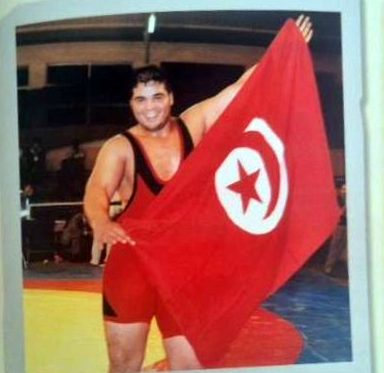
Né en 1972, venu du Club Africain. Six médailles africaines entre 1993 et 2001 (or en 1997, 2000 et 2001), or aux Jeux africains 1995 et bronze aux Jeux méditerranéens 2001. JO d'Atlanta 1996 et de Sydney 2000.
Six fois champion d'Afrique de lutte gréco-romaine : 1993, 1996, 1997, 1998, 2000 et 2001 (livre du centenaire).
p. 200
Né en 1952 à Kairouan, joueur puis entraîneur. Entraîneur de l'Espérance à plusieurs reprises (1996, 2004-2006, 2011-2012) : championnats 1997, 2005 et 2012, Coupes 2005 et 2006. Adjoint puis sélectionneur national, directeur technique de la fédération ; a aussi dirigé l'Arabie saoudite et le Maroc.
p. 199
Né en 1976 à Tunis, formé au club : Coupe d'Afrique des vainqueurs de coupe 1998, cinq championnats consécutifs de 1999 à 2003 et Coupe 1999. International de 1999 à 2002. Entraîneur des jeunes en 2011.
p. 194
Championne du monde universitaire en 2002 en Corée du Sud, première Africaine et Arabe à remporter ce titre. Bronze au championnat d'Afrique 2000. Puis entraîneuse.
p. 194
Gardien venu de Menzel Temime, il partage le poste avec Habib Yagouta et Yasser Trabelsi. Champion 1991, doublés 1992, 1993 et 1995, Coupe 1994 ; international en 1993-1994.
p. 56
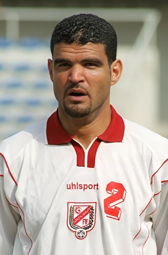
Né en 1973 à Kairouan, arrivé de la JS Kairouan en août 1995. Avec des passages en Turquie, au Genoa et à Al-Ahli Djeddah, il revient plusieurs fois au club, où il gagne sept championnats, trois Coupes, la Coupe CAF 1997, la Coupe des coupes 1998 et la Ligue arabe 2009. International à partir d'octobre 1995 : Coupes du monde 1998 et 2002, vainqueur de la CAN 2004.
p. 62-63
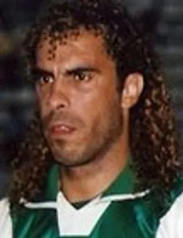
Marocain né en 1971 à Béni Mellal, vainqueur de la Coupe CAF 1996 avec le KAC Marrakech. À l'Espérance de janvier 1997 à 1998 : Coupe de Tunisie 1997, Coupe CAF 1997, championnat 1998. International marocain, JO 1992 et CAN 2000.
p. 62
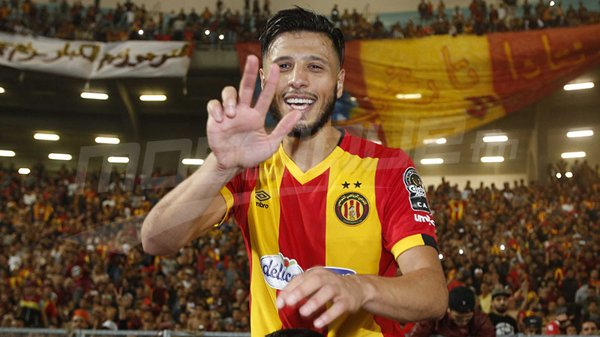
Né à Lyon en 1990, formé à l'OL. À l'Espérance d'août 2016 à 2020 : Coupe 2016, championnats 2017, 2018 et 2019, Coupe arabe 2017 et Ligues des champions 2018 et 2019 ; il marque le troisième but de la finale retour 2018 contre Al Ahly (3-0). International, Coupe du monde 2018.
p. 63
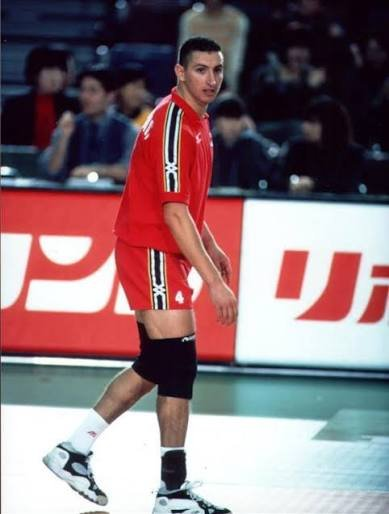
Né en 1974, venu de Hammam-Lif en 1995. Champion d'Afrique des clubs 1998 et trois doublés (1996, 1997, 1999), meilleur sportif tunisien 1999. International : JO d'Atlanta 1996, champion d'Afrique 1995 (meilleur joueur) et 1997, Mondial 1999.
p. 67-68
Venu de l'ES Radès en août 1994, présenté alors comme la meilleure recrue du club. Doublés championnat-Coupe en 1996, 1997 et 1999, champion en 1998 ; international de 1994 à 1999.
p. 55
Lutteur des 57 à 68 kg, à l'Espérance au moins de 1983 à 1994, dont il est capitaine. International de 1981 à 1994 : or maghrébin 1983, argent africain 1984 et 1989, bronze aux Jeux africains 1987. Puis sélectionneur de la lutte libre.
p. 98
Né en 1989, venu du Sporting de Moknine en 2011. Avec l'Espérance : cinq championnats, deux Coupes, la Ligue des champions 2013, deux Supercoupes d'Afrique et deux Coupes des coupes. Meilleur buteur du club au Mondial des clubs 2014 ; international, Jeux olympiques de Rio 2016.
p. 59
Formé à l'école Farhat Hached, à l'Espérance de 1977 à 1987. Champion de Tunisie des mi-lourds en 1981, 1982 et 1984, champion du Maghreb en 1981.
p. 61
Né le 1er décembre 1949, jumeau d'Anis et fils de Hamadi Bahri, président de la fédération en 1961. À l'Espérance dès 1962, il détient plusieurs années le record de Tunisie du 100 m brasse et gagne des médailles d'or aux championnats du Maghreb (1964-1966), avant de passer au water-polo.
p. 59-61
Jumeau d'Anas, à l'Espérance dès 1962. Il bat une dizaine de records de Tunisie, enchaîne les médailles d'or maghrébines, remporte l'argent du relais et le bronze du 100 m papillon aux Jeux africains de 1965, puis l'argent et le bronze aux Jeux méditerranéens de 1967.
p. 60-61
Né en 1977, deuxième gardien de l'Espérance (champion 1997), il passe ensuite par le Club Africain, Livry-Villepinte et l'Étoile. International jusqu'au Mondial 2001, il dispute les Jeux de Sydney 2000 et gagne l'argent aux Jeux méditerranéens 2001.
p. 62
Né en 1947, à l'Espérance du milieu des années 1960 à 1981 : champion 1965, 1966, 1967, 1968, 1969 et 1976. International de la génération Annabi et Belkhodja, médaillé d'argent aux Jeux africains 1965, champion d'Afrique 1967 et du Maghreb 1971. Chirurgien-dentiste.
p. 61
Né en 1965 à Paris, rentré en Tunisie enfant. Passé à l'Espérance après le Club Africain, il est champion de Tunisie du 50 m libre et des 100 et 200 m brasse en 1983, et nage pour l'équipe nationale avant de repartir étudier à Paris.
p. 72-73
Camerounais né en 1991 à Maroua. À l'Espérance de 2009 à 2012 : Ligue des champions 2011, championnats 2010 et 2011. International camerounais à partir de 2015.
p. 97
Né en 1961, en équipe première de 1979 à 1993 : Coupes 1989 et 1991. International de 1987 à 1991, il dispute les JO de Séoul 1988. Entraîneur des jeunes du club ensuite.
p. 98-99
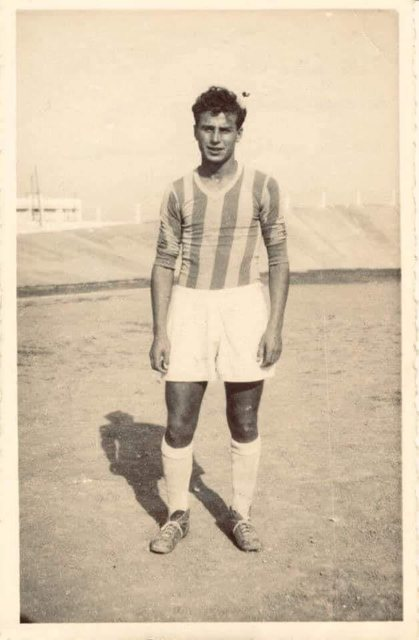
Pilier des bureaux de l'Espérance pendant près de quinze ans : vice-président en 1963-1964, 1967-1968, 1972-1973 et 1976-1977, chargé en particulier de l'administration et du secrétariat général sous la présidence de Hassen Belkhodja.
p. 292-293
Né en 1993, venu de l'Étoile du Sahel en juillet 2017. Décisif dans la finale de la Coupe 2018 contre son ancien club, il gagne aussi le championnat arabe en décembre 2018. International depuis 2012.
p. 63
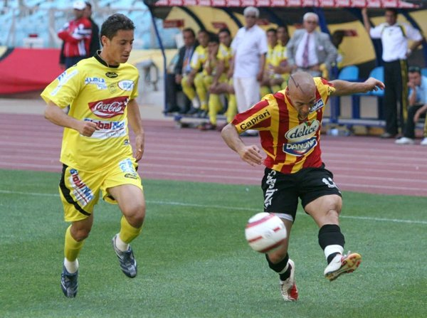
Né en 1984 dans le Val-de-Marne, finaliste de la Coupe de France 2004 avec Châteauroux. À l'Espérance de 2005 à 2008 : championnat 2006 et Coupes 2006, 2007 et 2008. International de 2005 à 2008.
p. 69
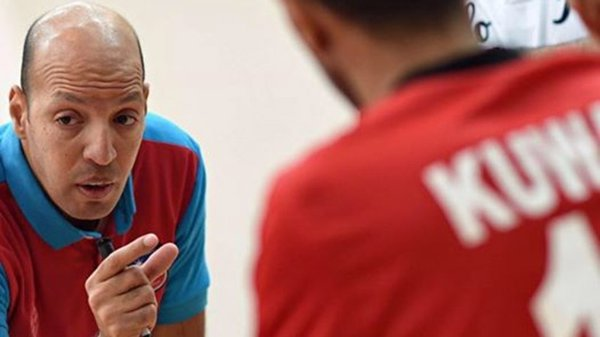
Né en 1973, à l'Espérance de 1993 à 2003 puis de 2006 à 2010 comme capitaine. Coupe d'Afrique des clubs 1994, quatre doublés, champion 1998. International : champion d'Afrique 1995, 1997 et 2003, JO 1996 et 2004. Entraîneur titré à Bahreïn, en Arabie saoudite et au Koweït.
p. 73
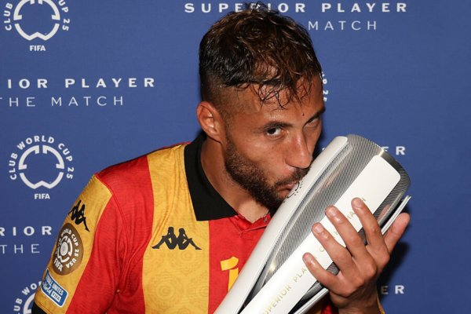
Algérien né en 1992 à Oran. Deux passages à l'Espérance : championnats 2014, 2018 et 2019, Supercoupe 2019, Ligues des champions 2018 et 2019. Vainqueur de la CAN 2019 avec l'Algérie, élu meilleur joueur africain évoluant en Afrique en 2019.
p. 69
Judoka de l'Espérance et de l'équipe nationale dans les années 1980, champion de Tunisie 1983 et médaillé d'argent au championnat d'Afrique de Tunis en 1985. Il devient ensuite entraîneur adjoint au club.
p. 57
Champion de Tunisie 1942, il marque le but de l'Espérance en finale de Coupe 1947 (défaite 1-2 contre Hammam-Lif). International en 1942, il fait partie des premiers joueurs retenus pour la sélection de Tunisie en mai 1945.
p. 56
Né en 1964, passé par l'Olympique de Halk El Oued et du Kram. Doublé 1992-1993, Coupe 1994 et Coupe d'Afrique des clubs champions 1994 avec l'Espérance ; international, CAN 1987.
p. 56
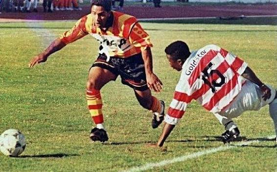
Né en 1969 au Bardo, surnommé « Tahamata ». Meilleur buteur avec le CA Bizertin (1993 et 1998), il gagne avec l'Espérance le championnat 1994, la Coupe afro-asiatique 1995 (trois buts sur quatre en finale), la Coupe et la Coupe CAF 1997. International (10 matchs, 5 buts).
p. 70
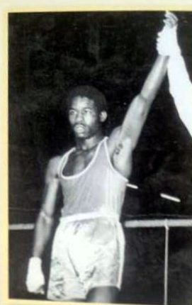
Né en 1962, à l'Espérance et en sélection dès 1976. Meilleur sportif tunisien 1979 après l'or des Jeux méditerranéens de Split, de nouveau en or à Casablanca en 1983, champion arabe 1980 et 1984, il dispute les JO de Los Angeles 1984 avant de passer pro en Italie et en Belgique.
Champion méditerranéen et arabe (livre du centenaire).
p. 72
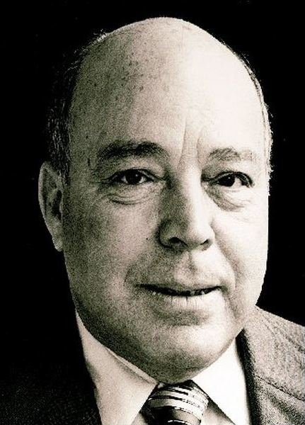
Né en 1916 à Ras Jebel, militant du Destour, diplomate, fondateur de banques nationales et plusieurs fois ministre. Il prend la tête de l'Espérance après la crise de juin 1971 et la préside jusqu'à sa mort, le 29 novembre 1981 : titres de 1975 et 1976, Coupes 1979 et 1980, domination du handball. Le complexe sportif du club porte son nom depuis 1983.
Le livre du centenaire situe sa mort à la fin de 1981 ; Naceur Knani lui succède.
p. 71-72
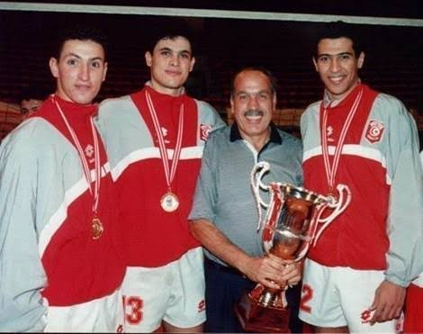
Né en 1939, joueur et entraîneur à la fois, il fait monter la section de la troisième division à l'élite en trois ans après 1956, puis lui fait gagner six championnats et quatre Coupes. Meilleur sportif tunisien 1967, capitaine puis sélectionneur national, il dirige ensuite la technique du club et de la fédération (1982-1998).
p. 70-71
Champion de Tunisie en double en 1982, à l'Espérance au moins de 1983 à 1987 : Coupe 1983, championnat 1985. International en 1983-1984, puis membre du bureau fédéral.
p. 69
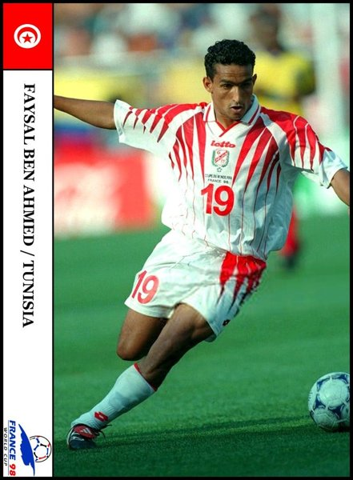
Né en 1973 à l'Ariana, à l'Espérance de 1996 à 2003 : cinq championnats (1998 à 2002), Coupes 1997 et 1999, Coupe CAF 1997 et Coupe des coupes 1998. International en 1998-1999, il dispute la Coupe du monde 1998.
p. 75
Président de l'Espérance en 1923-1924, entre Arroussi Ben Osman Turki et Mohamed Zouaoui.
p. 88
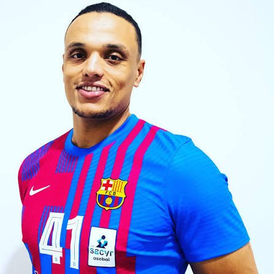
Né en 1987, formé à l'Espérance, en équipe première jusqu'en 2012 puis capitaine en 2016-2017. International tunisien, il est naturalisé qatari en 2014 et joue la finale du Mondial 2015 avec le Qatar.
p. 88
Né en 1917 à Tunis, d'abord athlète. À l'Espérance dès 1937, il marque deux buts dans la finale de la Coupe 1939 contre l'Étoile (4-1) et gagne le critérium 1944. Meilleur buteur du club en 1946-1947, il part ensuite à l'Union sportive musulmane. International en 1941 et 1942.
p. 88-89
Né en 1971, révélé par son but en finale de la Coupe 1990 avec le Mostakbel de la Marsa. À l'Espérance à partir de juillet 1992, il est freiné par une grave blessure en 1994. International de 1990 à 1993.
p. 77
Handballeuse de l'équipe féminine de l'Espérance à la fin des années 1980, internationale de 1987 à 1992. Elle devient ensuite responsable du sport féminin, à la fédération puis au ministère, et entre en 2018 au conseil de la Fédération internationale de handball.
p. 74
Handballeuse de l'Espérance dans la seconde moitié des années 1980, internationale à partir de 1987 ; elle dispute le championnat d'Afrique B au Nigeria en 1992.
p. 75
Lutteur en libre des plus de 100 kg, à l'Espérance dans les années 1980 puis en 1994. Champion de Tunisie, médaillé d'argent au championnat d'Afrique de Tunis (1981), champion du Maghreb (1982, 1983), médaillé d'or aux Jeux arabes et au championnat d'Afrique de Casablanca en 1985.
p. 76
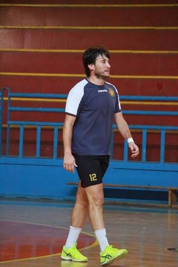
Né en 1979, venu de l'Olympique de Kélibia. Avec l'Espérance, il gagne de nombreux titres nationaux, arabes et africains, et devient capitaine. Meilleur passeur des championnats d'Afrique 2013, 2014 et 2015, capitaine de la sélection, il dispute les Jeux de Londres 2012.
p. 77
Né en 1910 à Tunis, avocat formé à Paris, il joue au Racing Club de Paris en professionnel avant de rejoindre l'Espérance en 1934-1935, dont il est le capitaine. Seul musulman de la sélection de Tunisie en 1935, il participe plus tard aux négociations de l'autonomie interne et devient bâtonnier en 1967.
p. 76
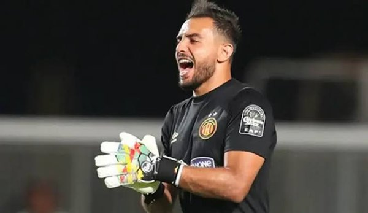
Né en 1991 à Tunis, à l'Espérance depuis 1999, en équipe première depuis 2010, capitaine en 2019. Jusqu'en 2022 : neuf championnats, deux Coupes, deux Supercoupes, la Coupe arabe 2017 et trois Ligues des champions (2011, 2018, 2019). International, CAN 2013 et 2019.
p. 83
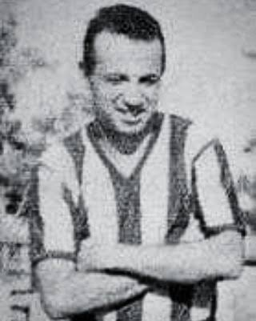
Né en 1933 à Bab Menara, passé du Club Africain à l'Espérance au début des années 1950. Coupe 1957 (il marque contre l'Étoile en finale), championnats 1959 et 1960 ; international, il dispute les JO de Rome 1960. Formé à l'entraînement à Bagdad, premier entraîneur tunisien professionnel, il dirige plusieurs fois l'Espérance (Coupe 1964, titres 1970 et 1976) et publie en 1969 un livre sur le football.
p. 86-87
Né en 1967, passé par l'Ariana, le Club Africain et l'Allemagne, à l'Espérance à partir de 1991 : doublé 1992-1993. International, champion d'Afrique en 1994.
p. 89
Né en 1959, à l'Espérance et en sélection dès 1978. Bronze aux Jeux méditerranéens 1979, champion d'Afrique 1985 à Tunis, argent aux Jeux africains 1987 ; il dispute les JO de Los Angeles 1984. Entraîneur du club, puis sélectionneur des juniors.
p. 90
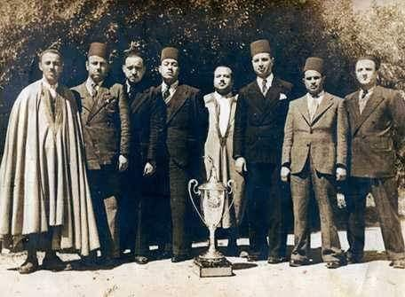
Né en 1910, joueur de l'Espérance de 1927 à 1939 et capitaine dès 1930, il entraîne l'équipe en même temps. Il la fait monter en 1936, la conduit en finale de Coupe en 1937 et à la première Coupe de Tunisie en 1939. Entraîneur diplômé, puis membre du bureau et de la commission technique de la sélection.
p. 89
Né en 1983 à Kélibia, à l'Espérance de 2005 à 2017 : Coupe d'Afrique des clubs 2014, championnats 2015 et 2016, Coupes 2014 et 2017. International : finaliste de la CAN 2005, argent aux Jeux méditerranéens 2013, Jeux olympiques de Londres 2012.
p. 78
Né en 1963, à l'Espérance de 1985 à 1993 : Coupes de Tunisie 1987 et 1989. International, il dispute plusieurs championnats d'Afrique et le championnat arabe de 1989. Il fait partie des anciens qui ont tenté de relancer la section en 2011.
p. 78-79
Boxeur des poids mouche et coq, à l'Espérance au début des années 1980, champion de Tunisie en 1981 et 1982 et international. Il passe professionnel en Italie en 1985.
p. 78
Né en 1961, venu de Vénissieux en 1988. Champion 1991, doublés 1992, 1993 et 1995, Coupe 1994, capitaine en 1995. International : meilleur buteur des Jeux méditerranéens 1991. Devenu entraîneur, il est l'adjoint d'Alain Portes en sélection (2009-2010) et dirige plusieurs clubs, dont l'Espérance en 2017.
p. 79
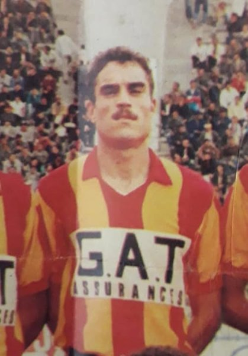
Né en 1957, dix-sept saisons en équipe première (1974-1991) : sept championnats et quatre Coupes. International de 1977 à 1981.
p. 91
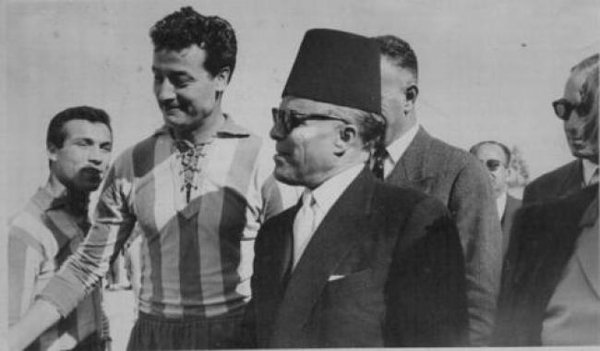
Né en 1933, venu de l'Ariana en 1954, compté parmi les meilleurs arrières du pays. Coupe 1957, championnats 1959 et 1960, international en 1956 et 1957. Plus tard membre du bureau et chroniqueur sportif.
p. 92
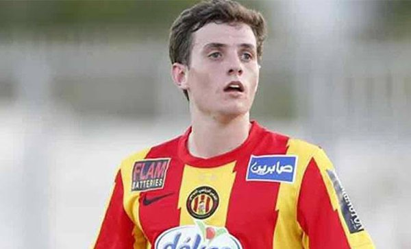
Né à Londres en 1994, formé en Irlande au Bohemian FC. À l'Espérance d'août 2016 à 2019 : trois championnats, la Coupe arabe 2017 et les Ligues des champions 2018 et 2019. International, CAN 2019.
p. 90-91
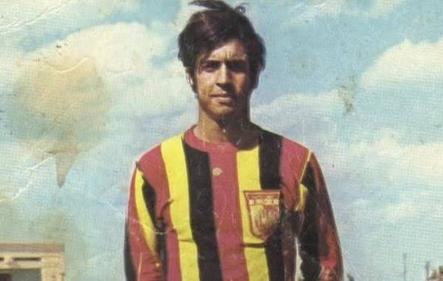
Né en 1949 à Bab El Khadra, lancé en seniors à 17 ans par Sandor Pazmandy, premier match contre le Club Africain en novembre 1966. Champion 1970, 1975 et 1976, capitaine de la Coupe 1979 ; son triplé contre le CSS en 1972 reste célèbre. International de 1969 à 1974, puis entraîneur.
Le livre du centenaire raconte son but contre le CS Sfaxien, la saison qui suit l'affaire de 1971 : il dribble la défense et le gardien, s'arrête sur la ligne et marque. Il est honoré lors du centenaire.
p. 91
Né en 1956, lutteur de 82 à 100 kg, à l'Espérance de 1983 à 1993 puis entraîneur jusqu'en 1997 (doublés 1989-1992). Capitaine de la sélection, champion des Jeux africains 1978 en libre, de nombreuses fois médaillé africain, arabe et maghrébin.
p. 93
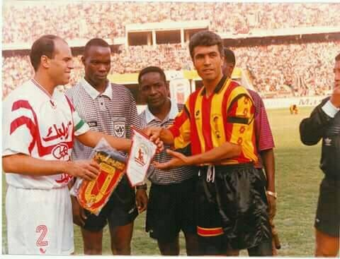
Né en 1961 à Tunis, en équipe première de 1981 à 1997, capitaine. Sept championnats, trois Coupes, et la Ligue des champions 1994, où il marque un penalty en finale retour contre le Zamalek. International de 1983 à 1994, puis entraîneur.
p. 92-93
Attaquant de la montée en élite de 1936 et de la finale du championnat 1939. Premier Espérantiste appelé en sélection : il marque dès son premier match, le 12 avril 1936 contre Constantine.
p. 87
L'un des fondateurs : trésorier du premier bureau, vice-président sous Mohamed Malki, puis élu président à l'unanimité le 8 octobre 1922 pour la saison 1922-1923.
p. 87
Né en 1958, neveu de Hédi Fadou. Coupes 1979, 1980, 1986 et 1989, championnats 1982 et 1985. International de 1979 à 1986. Entraîneur de petits clubs ensuite.
p. 207
Né en 1970, frère de Slim et Borhane. Passé du Gaz à l'Espérance au début de 1992, il est huit fois champion de Tunisie. International dès 1987, médaillé d'or aux Jeux arabes de Damas, il reste en sélection jusqu'en 2001.
p. 81
Né en 1999 à Tunis, formé au centre de l'Espérance dès l'âge de sept ans. Premier match en seniors en avril 2018 ; champion de 2018 à 2022 et vainqueur de la Ligue des champions 2019. International depuis octobre 2019.
p. 80-81
Né en 1965, meilleur buteur du championnat 1986 avec le Gaz. Passé à l'Espérance en 1987, il joue en professionnel au Racing de Paris avant de revenir renforcer le club dans les grands rendez-vous, dont le titre maghrébin de 1992. Capitaine de la sélection, champion arabe en 1987, il en devient sélectionneur en 2012.
p. 80
Né en 1963 au Kef, formé à l'Espérance, doublés 1982 et 1983 en seniors. Sélectionné pour le Mondial juniors de 1983.
p. 84
Pilier de l'équipe qui monte en élite en 1936 : finale de Coupe 1937, première Coupe de Tunisie en 1939. Appelé en sélection en novembre 1937, il est le troisième Espérantiste international, après Tsouri et Youssef Ben Osman.
p. 82
Venu de l'US Radès, il gagne avec l'Espérance le premier championnat de son histoire (1942) puis le critérium 1945. International dès 1941, il fait partie, avec Tsouri et Belhadj Ali, des premiers joueurs retenus pour la sélection de Tunisie en 1945.
p. 81-82
Tisserand de la Médina, l'un des fondateurs. Pressenti pour présider le club, il s'efface parce que les autorités exigent un Français à la tête du bureau : la présidence revient à Louis Montassier, et Ben Saïdane devient vice-président.
p. 82
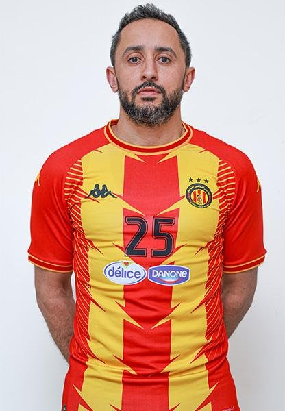
Né en 1990 à Sfax, passé par l'Étoile, à l'Espérance depuis 2014 : trois championnats, trois Coupes, les championnats arabes 2018 et 2022 et la Ligue des champions 2022. International, Mondiaux 2013 et 2023.
p. 83-84
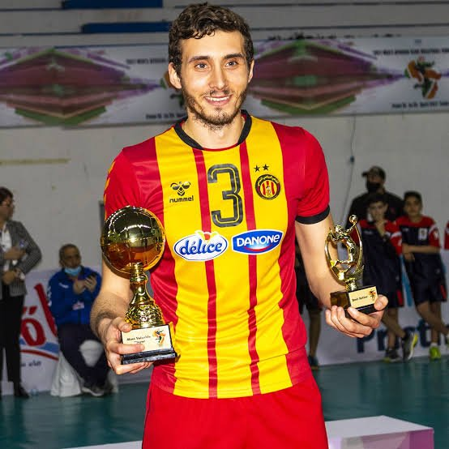
Né en 1994 à Kélibia, à l'Espérance depuis juin 2016 : Coupe 2017 puis cinq doublés de 2018 à 2022. Champion d'Afrique avec la sélection en 2017, élu meilleur passeur, il dispute le Mondial 2018.
p. 83
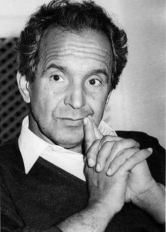
Né en 1927, d'origine djerbienne, juriste, journaliste (il dirige Afrique Action, future Jeune Afrique) puis éditeur (fondateur des éditions Cérès). Vice-président à la fin de l'ère Zouiten, il préside l'Espérance de 1963 à 1968 : Coupes de football 1964 et 1967, quatre doublés de volley et le titre de handball 1968. Décédé en 2018.
Vice-président de Chedly Zouiten, il lui succède en 1963 à trente-sept ans : directeur du Tourisme, journaliste, fondateur des éditions Cérès (livre du centenaire).
p. 75-76
Brigadier de police, l'un des fondateurs : secrétaire général du bureau provisoire, il joue aussi en défense dans la toute première équipe de l'Espérance.
p. 82
Volleyeuse de l'Espérance de 1987 à 1992, finaliste de la Coupe 1987. Internationale à partir de novembre 1987, championne arabe à Tunis en 1989.
p. 84-85
Né en 1985, à l'Espérance jusqu'en 2017 avant Lyon. International : Mondial 2006, Coupe du monde 2007, champion d'Afrique 2009.
p. 84
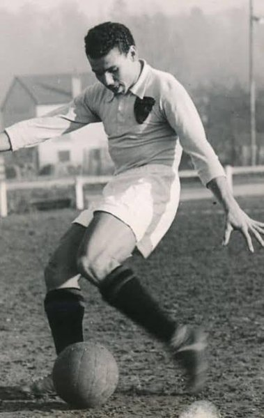
Né en 1927 à Hussein Dey, venu du MC Alger, il porte le maillot de l'Espérance en 1946-1947. Après Hammam-Lif (Coupe 1948), il fait carrière à Nice (champion de France 1951, doublé 1952) et Monaco, joue pour la Tunisie puis pour la France (Coupe du monde 1954), avant de mener comme capitaine l'équipe du FLN en 1958. Mort en 1970.
p. 85
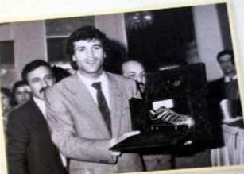
Né en 1959 à l'Ariana, en équipe première d'octobre 1977 à août 1995. Sept championnats, cinq Coupes, la Supercoupe et la Ligue arabe ; meilleur sportif tunisien 1989, deux fois Soulier d'or. International de 1979 à 1993, capitaine. Entraîneur, il ramène plusieurs titres au club, dont le championnat 2018 et la Ligue des champions 2018.
Soulier d'or 1986-1987 (livre du centenaire).
p. 94-95
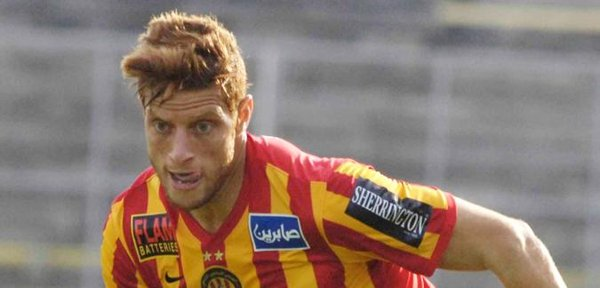
Né en 1991 à Tunis, passé par le CSS et Metz. À l'Espérance de 2015 à janvier 2018 : Coupe 2016, championnat 2017, Coupe arabe 2017. International depuis 2012, il marque contre le Panama à la Coupe du monde 2018.
p. 96
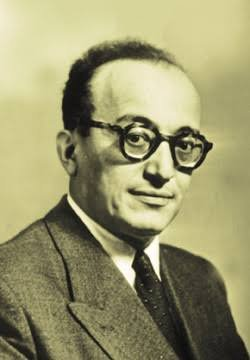
Leader nationaliste (1907-1961), avocat rue de Bab Souika, au même siège que Bourguiba. Il assiste aux grands moments de l'Espérance, dont le trentenaire de janvier 1949, et vient encore au stade du Belvédère à l'invitation du club en octobre et novembre 1955, quelques semaines avant son exil.
p. 95-96
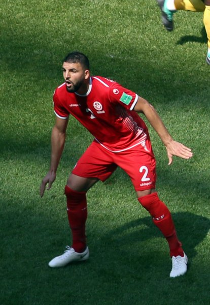
Né à Marseille en 1989, formé à l'Espérance, en équipe première de 2009 à 2011 : championnats 2010 et 2011. Carrière ensuite en Angleterre, Roumanie, France et Turquie. International depuis 2009, CAN 2015 et 2017.
p. 96
Né en 1965, originaire de Jendouba, venu de la Zitouna en 1985 ; Coupe 1986, avant un passage à Djerba et Jendouba puis un retour en 1995. International juniors puis seniors en 1985.
p. 97
Gardien de l'Espérance à partir de 1951, compté parmi les meilleurs du pays en 1954. Coupe 1957 et championnat 1959, avant de céder sa place à Khaled Gharbi. International de 1956 à 1959.
p. 98
Né en 1950 à Monastir, joueur de l'US Monastir. Entraîneur de l'Espérance à quatre reprises entre 1993 et 2017 : cinq championnats, la Ligue des champions 1994, la Supercoupe d'Afrique 1995 et trois Ligues arabes. Également sélectionneur national.
p. 97
Né en 1968, en seniors de 1985 à 1995 ; vainqueur de la Coupe 1989, international en 1990. Adjoint de l'équipe première en 2013, il fonde en 2015 l'amicale des anciens de l'Espérance.
p. 64
Élu meilleur jeune joueur en 1936, il passe par l'Association sportive française et la Charguia avant l'Espérance (1942-1943). Il fait partie des premiers musulmans appelés en sélection de Tunisie, dès novembre 1936. Entraîneur du Stade Tunisien, champion en 1961.
p. 64
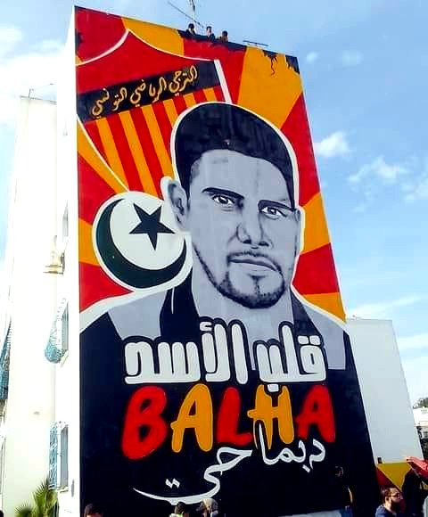
Né en 1972 au Bardo, originaire de Kerkennah, il commence au basket avant de choisir le football à l'Espérance. Premier match en seniors le 31 janvier 1991 contre le Club Africain. Champion 1993 et 1994, il marque deux buts en finale de la Ligue des champions 1994 contre le Zamalek, puis gagne la Supercoupe et la Coupe afro-asiatique 1995. International (26 matchs, 6 buts), élu meilleur joueur tunisien 1994 et meilleur joueur arabe 1995, il meurt d'un arrêt cardiaque le 4 janvier 1997, en plein match amical contre Lyon au stade Chedly Zouiten.
Selon le livre du centenaire, son premier titre est la Coupe de Tunisie 1991 ; il marque deux fois en finale de la Coupe d'Afrique des clubs champions 1994 et meurt sur le terrain le 4 janvier 1997, lors d'un match contre l'Olympique lyonnais.
p. 57
Né en 1949, passé du football au handball en 1963. Gardien de l'Espérance de 1969 à 1984 : 27 titres nationaux et quatre championnats arabes des clubs. International de 1969 à 1980, il est de l'équipe des Jeux olympiques de Munich 1972 et des titres maghrébin (1971) et africain (1976).
p. 64-65
Né en 1954, passeur de la génération Raouf Bahri, Samir Tebourski et Slim Chiboub : champion 1977-1978, Coupe 1979-1980. International : Coupe maghrébine 1973, Mondial 1974 au Mexique, champion d'Afrique 1977. Entraîneur ensuite en France, en Arabie saoudite et en Libye.
p. 65
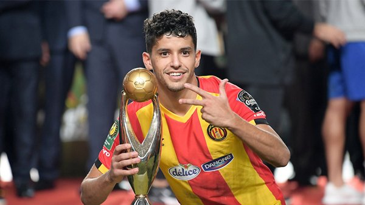
Né en 1994 à Tataouine, à l'Espérance de septembre 2015 à juin 2019 : Coupe 2016, championnats 2017, 2018 et 2019, Coupe arabe 2017 (doublé en finale) et Ligues des champions 2018 et 2019. International, CAN 2017 et Coupe du monde 2018.
p. 68
Né en 1974 à Tunis, à l'Espérance de 1994 à 2004 puis en 2007, avec un passage à l'Étoile et à Al Wahda. Sept championnats entre 1998 et 2004 et plusieurs Coupes ; une sélection en 1996.
p. 68
Champion de Tunisie en simple en 1982-1983, il rejoint l'Espérance : titre par équipes 1985, champion en simple 1986. Capitaine de la sélection, bronze africain en 1985.
p. 104
Née en 1976, à l'Espérance à partir de 1993. Internationale de 1989 à 1995, elle bat en 1991 les records d'Afrique du 100 et du 200 m brasse, et gagne deux médailles d'or aux championnats du Maghreb 1995.
p. 104-105
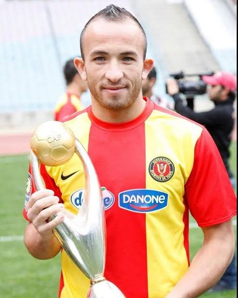
Né en 1985 à Kasserine, à l'Espérance de 2006 à 2013 : quatre championnats, deux Coupes, la Ligue arabe 2009 et la Ligue des champions 2011. International à partir de 2012.
p. 105
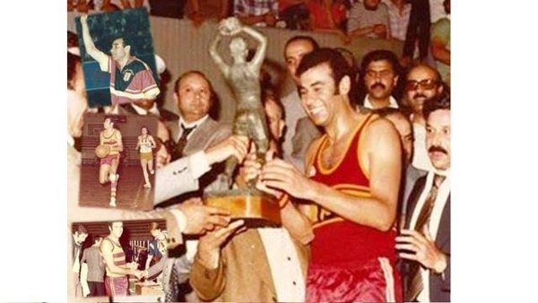
Né en 1946, professeur d'éducation physique. Joueur-entraîneur à l'Espérance à partir de 1975 (doublé 1977, titre 1978), puis entraîneur à plusieurs reprises (Coupes 1987, 1989, 1994). Médaillé d'or aux Jeux africains de 1973, élu meilleur joueur, il dirige aussi les sélections féminine et masculine.
p. 102-103
Lutteur en libre, à l'Espérance de 1986 à 1994 (doublé 1986), champion de Tunisie en 1982, 1985, 1987 et 1990. International, bronze maghrébin 1982 et argent africain 1989.
p. 99
Ailier gauche de l'Espérance dans les années 1920, il part étudier la chimie à Paris et suit les cours d'entraîneur de la Fédération française : en 1931, il est le premier Tunisien et le premier Maghrébin diplômé. Il entraîne ensuite l'Espérance et l'Étoile du Sahel.
p. 99-100
Né en 1989, venu de Hammamet en 2015 : Coupe des coupes 2015, Supercoupe 2016, championnats 2016 et 2017, Coupe et championnat arabe 2018. Champion d'Afrique 2018.
p. 107
Boxeur des poids mouche à plume, champion de Tunisie et du Maghreb au début des années 1980, médaillé d'or aux Jeux méditerranéens de Casablanca 1983, il dispute les JO de Los Angeles 1984 avant de rejoindre l'Espérance en 1987.
p. 106
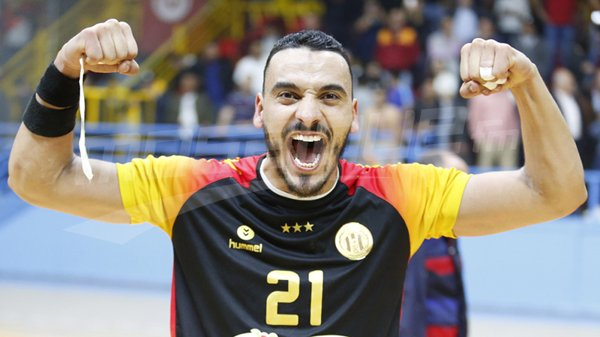
Né en 1990, passé par le Club Africain et Tremblay, à l'Espérance depuis 2015 : cinq championnats, trois Coupes, le championnat arabe et la Ligue des champions 2022. Champion d'Afrique 2012, JO de Londres 2012, quatre Mondiaux.
p. 105-106
Né en 1955 à Tunis, en seniors dès 1974 (triplé contre l'Étoile). Meilleur buteur du championnat 1975 avec 24 buts, champion 1975, Coupes 1979 et 1980. International de 1974 à 1979, puis entraîneur et adjoint de l'équipe première (2004-2009).
p. 106-107
Né en 1964, attaquant de l'Espérance. International jusqu'en 1990 : JO de Los Angeles 1984, champion d'Afrique 1987.
p. 107
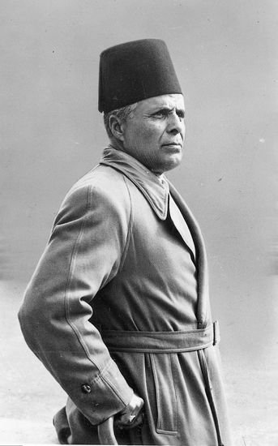
Avocat rue de Bab Souika, membre du bureau en 1931, présent à la finale de Coupe de 1937, président d'honneur dès 1955 puis président de la République (1957-1987). Il remet souvent la Coupe au club et intervient lors de la crise de 1971. Voir le dossier « L'Espérance, Bourguiba et la politique ».
p. 100-101
Né en 1948 à Sfax, venu du Transport de Sfax en 1977 : Coupe 1980. International de la fin des années 1960 à 1976, argent aux Jeux africains 1973, Mondial 1974. Puis entraîneur.
p. 103-104
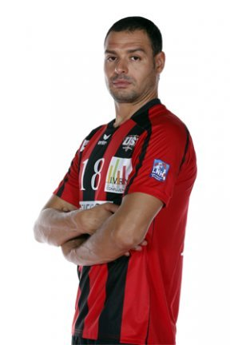
Né en 1976 à Mahdia, à l'Espérance jusqu'en 2006 : doublé et Ligue des champions 2005. Puis Tremblay et Ivry. International (267 matchs), quatre fois champion d'Afrique, JO de Sydney 2000.
p. 102
Lutteur en gréco-romaine, à l'Espérance à la fin des années 1970 et dans les années 1980, champion de Tunisie 1986. International : argent africain à Tunis en 1981, bronzes maghrébins et africains.
p. 102
Né en 1965, venu de Hammam-Lif : doublé 1992-1993, Coupe 1994 et Coupe d'Afrique des clubs 1994. International, CAN 1991 et 1993, Mondial 1991.
p. 101
Brésilien né en 1945 à Santos, ancien international. Entraîneur depuis 1979 sur plusieurs continents ; avec Zamalek, Ligue des champions d'Afrique 2002. Deux passages à l'Espérance (août-décembre 2007, mai-novembre 2008) : Coupe de Tunisie 2008 en finale contre l'ES Sahel.
p. 220
Né en 1981 à Béja, formé au club, champion avec les jeunes en 1998, en équipe première jusqu'en 2008 : six championnats, trois Coupes. Une sélection en 2002. Entraîneur adjoint en 2016, il succède à Khaled Ben Yahia en 2018 et remporte les Ligues des champions 2018 et 2019 et les championnats 2019, 2020 et 2021.
p. 178-179
Né en 1957, au javelot avec l'Espérance à partir de 1980. International de 1975 à 1988 : médailles africaines (or 1984), argent aux Jeux méditerranéens 1979 et bronze en 1983.
p. 178
Né en 1994 à la Manouba, formé au club, en équipe première à partir de 2014, puis Malatyaspor et retour en 2020. Coupe 2016, championnats 2017-2022, Coupe arabe 2017, Ligues des champions 2018 et 2019. International : Coupes du monde 2018 et 2022.
p. 179
Lutteur des poids mouche, à l'Espérance à partir de 1976 : champion de Tunisie et doublé par équipes en 1983. Bronze africain en 1971. Puis entraîneur et arbitre.
p. 180-181
Né en 1972, au water-polo de l'Espérance en 1994 (doublé), puis le Club Africain, Strasbourg et le Mostakbel de la Marsa. International de 1991 à 1997.
p. 181
Né en 1964, rugbyman de l'Espérance de 1985 à 1989 au moins, international de 1985 à 1995.
p. 175
Né en 1970 au Kef, venu de l'Olympique du Kef en 1996 : Coupe 1997, championnat 1998, Supercoupe arabe 1996 et Coupe des coupes 1998. International de 1994 à 1997. Puis les Émirats, et entraîneur.
p. 175
Né en 1947, en seniors dès 1964-1965 : trois doublés (1965, 1966, 1967) et le titre 1968. International en 1968.
p. 176
Né en 1981, plusieurs fois champion de Tunisie et sept fois champion d'Afrique, or aux Jeux méditerranéens 2009. Porte-drapeau de la Tunisie aux JO de Pékin 2008.
p. 175-176
Né en 1953, fils du fondateur du journal Assabah. Volleyeur de l'Espérance, appelé depuis Paris pour les grands matchs : champion 1976 et 1978. International, Mondial 1974. Puis dirigeant du groupe de presse familial.
p. 183
Né en 1987 à Tunis, fils et neveu d'anciens joueurs, formé au club depuis 1999, capitaine. Vingt titres nationaux, dont douze championnats (2006-2022) et quatre Coupes, deux championnats arabes (2009, 2017) et trois Ligues des champions (2011, 2018, 2019). International, Coupe du monde 2018.
p. 179-180
Sœur de Samia, handballeuse de l'Espérance en 1983 et 1985, internationale (championnat d'Afrique 1983).
p. 180
Sœur de Raja, handballeuse de l'Espérance en 1985, internationale de 1985 à 1992.
p. 180
Né en 1916 à Bab Souika, frère d'Ezzeddine Cherif, licencié dès 1927-1928, en équipe première en 1935 : montée en 1936, Coupe 1939. International en 1942. Entraîneur de l'Espérance (Coupe 1958, titre 1959, puis 1961-1962) et, avec Draoua, Soudani et Turki, de la sélection (1957-1960). Décédé en 1989.
p. 177
Pongiste de l'Espérance et de la sélection au début des années 1980, champion de Tunisie en double en 1982 avec Noufel Bellal.
p. 177
Né en 1951, champion de Tunisie de natation, passé au water-polo. Joueur-entraîneur de l'Espérance dès 1978, il revient l'entraîner en 1993 : doublé 1994 et deux titres maghrébins. Sélectionneur national (1993-1994).
p. 177-178
Né en 1959, ancien volleyeur du club et international. Président de l'Espérance de juillet 1990 à novembre 2004 : le club remporte dans cette période une vingtaine de titres en football et de nombreux autres en volley et handball, tandis que plusieurs sections sont dissoutes. Il siège ensuite aux comités exécutifs de la CAF et de la FIFA.
p. 182
Né en 1970 à Hammam-Lif, venu du club de sa ville en 1992 : six championnats, deux Coupes, la Ligue des champions 1994, la Coupe CAF 1997, la Coupe des coupes 1998, la Supercoupe et la Coupe afro-asiatique 1995 et des titres arabes. International (86 matchs) : CAN 1994 et 1998, Coupe du monde 1998.
p. 182-183
Né en 1960, frère de Sami, joueur puis joueur-entraîneur : championnats 1979 et 1982, Coupes 1979, 1987 et 1989. International de 1978 à 1982.
p. 184
Né en 1967, à l'Espérance de 1987 à 1994 : Coupes 1987 et 1989. International, CAN 1989.
p. 184
Né en 1955 à Nabeul, gardien de l'Espérance de 1973 à 1992. International (31 matchs de 1986 à 1989). Entraîneur des gardiens du club et de la sélection.
p. 181
Né en 1990, formé au Club Africain, passé par Tremblay, à l'Espérance de 2015 à 2017 : championnats 2016 et 2017, Supercoupe d'Afrique 2016. International : champion d'Afrique 2012 et 2018, JO de Londres 2012.
p. 181-182
Brésilien né en 1974, révélé à l'ES Sahel (1994-1998). À l'Espérance, record de 119 matchs pour un joueur étranger et trois championnats consécutifs (2002, 2003, 2004). Premier joueur étranger naturalisé pour jouer en sélection : Mondial 2002, JO 2004, 36 matchs.
p. 228-229
Ivoirien né en 1989, venu de l'US Monastir en 2014. Coupe 2016, championnats 2017 à 2022, Supercoupes, championnat arabe 2017 et Ligues des champions d'Afrique 2018 et 2019. International ivoirien en 2013.
p. 232
Malien né en 1987, passé par le CS Keita, la JS Kabylie et Al-Ahly Tripoli. À l'Espérance de 2011 à 2012 : Ligue des champions d'Afrique 2011 et championnat 2012. International malien depuis 2007.
p. 232
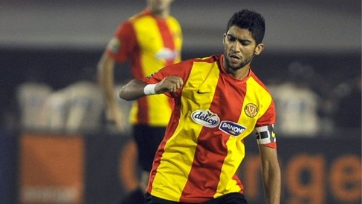
Né en 1987 à Tunis, formé au club, en seniors dès 2007, capitaine en 2011. Cinq championnats, deux Coupes, la Ligue arabe 2009 et la Ligue des champions 2011 ; Ballon d'or tunisien 2009, élu par les supporters meilleur joueur du club en 2011. Passages à Sion, Al-Raed, au CA Bizertin et au Club Africain. International de 2008 à 2013.
p. 142
Né en 1968, à l'Espérance dans les années 1990 : Coupe 1994, doublés 1994 et 1995, Coupe 1997. Champion d'Afrique 1994 avec la sélection, Mondial 1997.
p. 141
Suisse né en 1955, ancien joueur de Neuchâtel Xamax et Strasbourg. Entraîneur de l'Espérance de 2001 à 2003 puis en 2012 : championnats 2002, 2003 et 2012.
p. 149
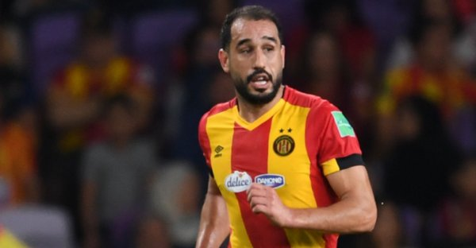
Né en 1986 à Jelma, à l'Espérance de 2006 à 2009 puis de 2010 à 2016 et depuis 2017. Neuf championnats, trois Coupes, les Ligues des champions 2011, 2018 et 2019 et le championnat arabe 2019. International (11 matchs).
p. 143
Né en 1973, il joue à l'Espérance de 1991 à 1993. Appelé en sélection en mars 1992, il est alors le seul basketteur du club en équipe nationale.
p. 146
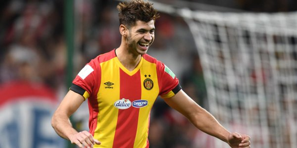
Né le 16 juin 1987 à Tunis, formé à l'Espérance de 1995 à 2001, il s'affirme à Hammam-Lif puis à l'Étoile du Sahel avant de revenir au club en janvier 2013. Il en devient le capitaine et gagne les championnats 2014, 2017, 2018, 2019 et 2020, la Coupe de Tunisie 2016, la Coupe arabe des clubs 2017 et les Ligues des champions 2018 et 2019. Première sélection le 2 août 2012 contre l'Iran.
p. 150
Né le 9 mai 1956 à l'Ariana, frère cadet de Tarak. Formé à l'Espérance, il joue son premier match en seniors en 1976-1977. Il gagne la Coupe de Tunisie en 1979 et 1980 et le championnat 1981-1982, puis part à l'Olympique des Transports avant de revenir finir sa carrière au club en 1987-1988. International en 1980 et 1981, il encadre ensuite les jeunes de l'Espérance. Il est décédé le 19 juin 2018.
p. 151
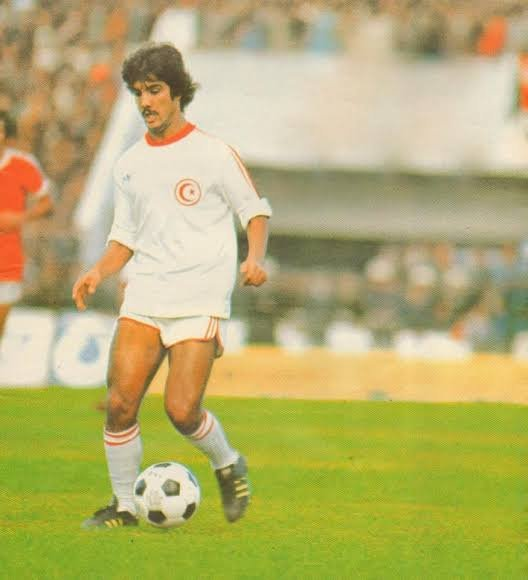
Né le 15 juillet 1954 à Tunis, il grandit entre Bab El Khadra et l'Ariana, et fait ses premières armes à l'AS Ariana avant de signer à l'Espérance. Premier match en seniors en 1972, premier but le 16 mars 1973 : il reste au club jusqu'en 1991, avec une parenthèse à Al-Ahli Djeddah (Coupe du Roi 1979). Avec l'Espérance, il gagne six championnats et deux Coupes de Tunisie, pour 429 matchs et 128 buts. International de 1974 à 1989, il joue la Coupe du monde 1978 et reste le seul Tunisien à avoir reçu le Ballon d'or africain (1977). Il sera plus tard ministre de la Jeunesse et des Sports (2011-2014).
Le livre du centenaire détaille sa carrière au club : six championnats (1975, 1976, 1982, 1985, 1988, 1989), 353 matchs et 107 buts en championnat, deux Coupes de Tunisie, 108 sélections, et au total 429 matchs et 128 buts sous le maillot de l'Espérance. Ballon d'or africain 1977, élu en 2000 meilleur footballeur tunisien du XXe siècle, il joue son dernier match en septembre 1990, au Caire.
p. 150-151, 302-303
Né en 1932, joueur du Najah, du Stade Tunisien et du Club Africain, puis entraîneur en Tunisie et dans le Golfe, et sélectionneur national (1979-1980). Entraîneur de l'Espérance de 1973 à 1976 puis de 1981 à 1982 : titre 1982. Décédé en 2009.
p. 152
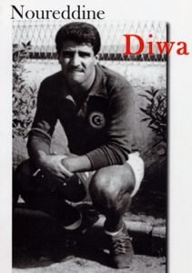
Né en 1937, l'un des artisans de l'âge d'or du Stade Tunisien (trois championnats, quatre Coupes), passé par Limoges. Il rejoint l'Espérance en 1968 et joue avec elle jusqu'au titre de 1970. International.
p. 149
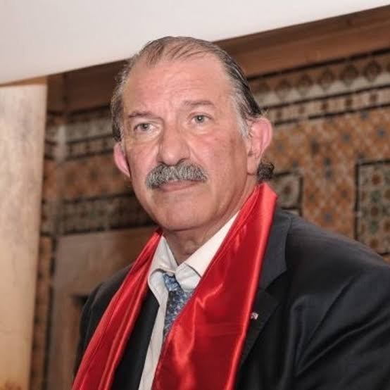
Né en 1948, industriel du textile, président de l'UTICA de 1988 à 2011. Président de l'Espérance de 1987 à 1990 : championnat 1988 et doublé 1989.
p. 126
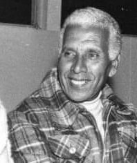
Né en 1914 à Oran, passé par l'USM Oran et Le Havre. À l'Espérance de 1940 à 1948, joueur et entraîneur, il forme avec Moncef Klibi le duo du premier titre de 1942. Entraîneur ensuite de Hammam-Lif (Coupes 1951 et 1957), de l'Espérance (titre 1960) et de la sélection de Tunisie ; il entraîne aussi l'équipe du FLN en 1957 avant de rentrer en Algérie. Décédé en 2008.
p. 142-143
Lutteur en 90 puis 100 kg, surnommé « le roi de la lutte africaine ». Champion de Tunisie à dix-neuf reprises entre 1971 et 1989, capitaine de l'équipe nationale de 1976 à 1985, il participe au championnat du monde de Lausanne (1977) et remporte sept titres africains. Il défend les couleurs de l'Espérance dans les années 1980.
p. 147
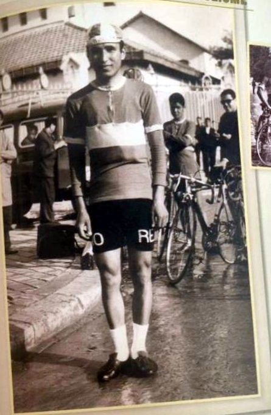
Né en 1941, il commence au Club Africain puis rejoint l'Espérance en 1963. Champion de Tunisie sur route en 1963, 1964, 1965, 1967 et 1969, deuxième en 1966 et 1968, il fait partie de l'équipe nationale médaillée d'argent aux Jeux méditerranéens de 1967. Il devient ensuite conseiller technique de la fédération.
« Champion de tous les temps » de la section cyclisme (livre du centenaire).
p. 147
Né en 1987, dix saisons au Club Africain (deux Coupes, trois championnats, quatre titres africains), puis la Hongrie. À l'Espérance depuis décembre 2017 : Coupe et championnat arabe 2018. International depuis 2007, champion d'Afrique 2010.
p. 148
Ancien joueur de Valenciennes et Strasbourg, puis entraîneur de Strasbourg (deux Coupes de la Ligue). Entraîneur de l'Espérance en 2006-2007 : Coupe de Tunisie.
p. 148-149
Venu de Hammam-Lif en 1951, gardien de l'Espérance derrière Mohamed Bennour puis Khaled Gharbi : champion 1959 et 1960. Il fait partie de la toute première sélection de Tunisie en 1956.
p. 180
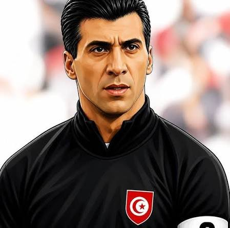
Né en 1966 à Tunis, au club dès 9 ans, titulaire à partir de 1991 après Abdennasser Chouchane. Capitaine : sept championnats (1993, 1994, 1998-2002), Coupes 1997 et 1999, Coupe arabe 1993, Coupe d'Afrique des clubs champions 1994, Supercoupe d'Afrique et Coupe afro-asiatique 1995, Coupe de la CAF 1997 et Coupe des coupes 1998. International (98 matchs) : Mondial juniors 1985, quatre CAN, JO 1996, Mondial 1998. Meilleur sportif tunisien 2000.
p. 282-283
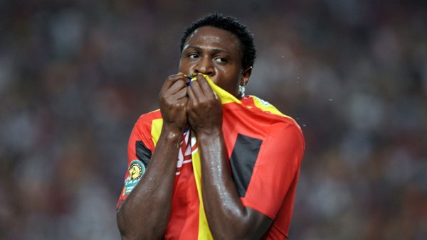
Nigérian né en 1985 à Kaduna, venu des Lobi Stars. Meilleur buteur du championnat en 2008-2009 (18 buts) et 2009-2010 (13), et de la Ligue des champions 2010. Il gagne avec l'Espérance deux championnats, trois Coupes de Tunisie et la Ligue arabe 2009, et compte neuf sélections avec le Nigeria.
p. 54-55
Né en 1971, licencié dès 1977, plusieurs fois champion de Tunisie. International de 1989 à 1997 : médailles arabes, maghrébines et aux Jeux arabes 1997. Puis entraîneur en France.
p. 184-185
Né en 1944, de la génération formée par Hassen Belkhodja : doublés 1964 à 1967, championnat 1968. International (38 matchs) : argent aux Jeux africains 1965, champion d'Afrique 1967, Jeux méditerranéens 1967. Mort en 2009.
p. 210
Venu de l'Avant-Garde en 1947. Classé par Le Petit Matin parmi les meilleurs avants-centres en 1955-1956. Vainqueur de la Coupe 1957, auteur du 2e but en finale. International en 1957. Entraîneur ensuite. Mort en 1998.
p. 207
Né en 1959 à Menzel Bouzelfa, mort en 2014. À l'Espérance de 1981 à 1985 : 25 buts en 78 matchs, meilleur buteur 1981-1982 (13 buts), champion 1982 et 1985. Pro en Belgique ensuite. International (21 matchs, 5 buts).
p. 205
Né en 1965, formé au club : championnats 1985, 1988 et 1989, Coupes 1986 et 1989. International juniors 1983, puis A en 1989-1990.
p. 205
Champion de Tunisie avec l'Espérance en 1967-1968 ; appelé la même année en sélection avec Raouf Bahri, Hassen Belkhodja et Mustapha Anabi.
p. 207-208
Retenu dans l'équipe de Tunisie aux Jeux méditerranéens de Split 1979.
p. 205
Né en 1979 à Kélibia, passé par l'Olympique de Kélibia, Saydia et le CS Sfaxien. À l'Espérance de 2013 à 2016, aussi entraîneur adjoint : triplé 2014 (Coupe, championnat arabe et africain). International depuis 1997 : Coupes du monde 1999 et 2003, JO d'Athènes 2004.
p. 208
Né en 1974 à Tunis, passé par le handball puis les Cheminots. À l'Espérance de 1993 à 2001, puis au Genoa et retour en 2003-2004. International (46 matchs, 16 buts) : JO d'Atlanta 1996, Mondial 2002 ; révélation de la CAN 1998. Entraîneur ensuite.
p. 208
Né en 1947, en seniors à 17 ans (premier match contre le Club Africain en 1964-1965). Champion 1970 et 1975. International juniors ; en sélection A, l'ombre d'Attouga. Puis entraîneur des gardiens au club.
p. 209
Venu de l'Olympique de Kélibia, entraîneur de l'Espérance en 1992-1993 : doublé après quinze saisons sans championnat, puis Coupe et Coupe d'Afrique des clubs 1994. Doublé à son retour en 2006-2007. Sélectionneur national en 1994.
p. 209-210
Né en 1943, d'abord athlète à la Zitouna (records juniors en sauts). Joueur puis entraîneur de l'Espérance en basket ; il forme notamment Sami Chikhaoui et Khemaïs Dakhlaoui. Entraîneur en Arabie saoudite ensuite. International (100 matchs), CAN 1970.
p. 209
Né en 1993, venu de Hammam-Lif en 2013 : championnats 2015 et 2016, Coupes 2014 et 2017. International jeunes : champion d'Afrique U19 (2010), U21 (2013) et U23 (2014, meilleur joueur).
p. 212
Né en 1984 à Tunis : championnats 2009, 2010 et 2012. Pro à Al-Ahli (doublé) puis à Al-Qadsiah. International depuis 2005 : bronze aux Jeux méditerranéens 2009, CAN 2010, Mondial 2011.
p. 215
Né en 1980 à Teboulba, passé par l'ES Sahel et le Club Africain. Avec l'Espérance : doublé 2013, championnat 2014, Ligue des champions d'Afrique 2013, Coupe des coupes 2013 et Supercoupe d'Afrique 2014. International : bronze aux Jeux africains 2007 et aux Jeux méditerranéens 2009.
p. 201
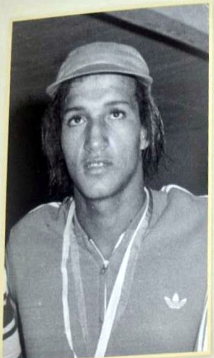
Né en 1955, mort en 2009. Venu du Club Africain en 1977 : 26 records d'Afrique et 47 de Tunisie, 22 titres africains et 22 maghrébins entre 1973 et 1981. Premier nageur arabe médaillé aux Jeux méditerranéens (Alger 1975). Meilleur sportif tunisien 1973 et 1975.
Selon le livre du centenaire, il rejoint en 1977 sa coéquipière en sélection Myriam Mizouni à l'Espérance et termine sa carrière en 1982, lors d'un critérium d'hiver, par un record d'Afrique du 100 m nage libre en bassin de 25 m.
p. 202-203
Né en 1946, mort en 2002. Capitaine de l'équipe en 1983. Quatre fois champion d'Afrique, six fois champion arabe et cinq fois champion du Maghreb ; Mondial 1977. Il entraîne ensuite l'Espérance et la sélection, puis devient directeur technique de la fédération.
p. 203-204
Né en 1941 en Algérie, gardien de l'Espérance au moins de 1960 à 1963, puis de 1966 à 1968 après un passage en France. International (11 matchs), dont les JO de Rome 1960. Entraîneur ensuite de petits clubs.
p. 201-202
Né en 1982 à Tunis, en seniors dès 2001, pro au HBC Nantes de 2010 à 2017. Quatre championnats (2004, 2005, 2009, 2010) et trois Coupes. International depuis 2005 : trois fois champion d'Afrique (2006, 2010, 2012), bronze aux Jeux méditerranéens 2005.
p. 204
Née en 1967, fille du gymnaste Hassen Gharbi, au club dès 8 ans. Championne de Tunisie à de nombreuses reprises entre 1985 et 1991, une cinquantaine de médailles : deux ors aux Jeux arabes 1985, Jeux africains 1987, six ors aux championnats d'Afrique 1990, or du 100 m aux Jeux méditerranéens 1991. Meilleure sportive tunisienne 1986. Puis entraîneuse au club.
Le livre du centenaire la range parmi « les légendes de la natation tunisienne ».
p. 202
Né en 1964, venu des Cheminots en 1993. International : CAN 1987, 1989 et 1993, championnat arabe 1989.
p. 204
Gardien de l'équipe de water-polo, doublé 1995. Puis au CN Bizerte. International en 1995, 1996 et 1997.
p. 205
Né en 1974, originaire de Zaghouan : champion 1993, Coupe 1994 et doublé 1995. Appelé en sélection en 1993.
p. 201
Née en 1959, formée au club. Championne de Tunisie, or du 200 m dos et argent du 100 m dos aux Jeux africains d'Alger 1978. Elle arrête ensuite pour ses études.
p. 204-205
Né en 1952 à Sfax. À l'Espérance à partir de 1973-1974 : cinq titres (championnats 1975, 1976 et 1982, Coupes 1979 et 1980). International de 1973 à 1976. Entraîneur de jeunes sélections puis de clubs, et analyste à la télévision.
p. 218-219
Né en 1943, joueur puis entraîneur de la section de tennis de table. International en 1971. Entraîneur de la sélection libyenne (1976-1978), puis en Arabie saoudite.
p. 212
En seniors dès 1967, finaliste de la Coupe 1969 et 1971. International en 1968-1969. Mort accidentellement en 1978.
p. 210
Né en 1953 à Sfax, passé par le Club Africain. Entraîneur de l'Espérance (2006-2007, 2009-2010) : Coupe 2010. International de 1971 à 1981, Mondial 1974.
p. 212-213
Né en 1974, venu du CS Sfaxien en 1995, puis passé par Nice. Quatre doublés (dont 1996, 1997 et 1999), Coupe d'Afrique des clubs 1998 et 2000, championnat arabe 2007. Capitaine de la sélection : champion d'Afrique 1995, 1997 et 1999, JO d'Atlanta 1996 et d'Athènes 2004. Revenu au club comme entraîneur fin 2011, il s'installe ensuite au Canada.
p. 219-220
Né en 1972, fils de Hamadi Hachicha, fondateur de la section de judo. Huit fois champion d'Afrique, porte-drapeau de la Tunisie aux JO d'Atlanta 1996, il participe aussi à ceux de Sydney 2000. Président de la fédération tunisienne de judo en 2011, puis vice-président de l'Union africaine.
p. 130-131
Né en 1957, en seniors de 1976 à 1986 : dix-huit titres nationaux, dont huit doublés, et trois championnats arabes (1977, 1978, 1979). International, champion d'Afrique 1979 et bronze aux Jeux méditerranéens 1979.
p. 131
Demi-centre de l'Espérance : championnat 2010, doublé 2013, Supercoupe d'Afrique 2014. International en 2010 et 2011.
p. 137
Escrimeur à l'Espérance à la fin des années 1960, international en 1969. Entraîneur (Club Africain 1982), directeur technique de la fédération (2000), arbitre international.
p. 279
Frère de Moncef, venu de la Zitouna avec lui : première Coupe du club en 1960. International en 1962.
p. 127-128
Né en 1936, joueur-entraîneur et capitaine de l'Espérance de 1957 à 1970 (championnats 1967 et 1969, Coupes 1960 et 1970). International (67 matchs), bronze aux Jeux africains 1965, Mondial 1967. Entraîneur du club à plusieurs reprises, sélectionneur et directeur technique national, considéré comme le père spirituel du handball tunisien. Décédé en 2015 ; un tournoi international porte son nom.
p. 127
Entré à l'Espérance à 14 ans en 1978, jusqu'en 1992 : Coupe 1992. International de 1981 à 1991, médaillé d'or aux Jeux arabes 1985 et au championnat arabe 1987. Docteur de l'université de Poitiers.
p. 135-136
Judokate de l'Espérance, internationale de 1989 à 1995 : argent aux Jeux de la Francophonie 1989, bronze arabe 1990, argent africain 1995.
p. 132
Joueur de l'Espérance en 1987-1988, puis du CS Sfaxien. International en 1988-1989.
p. 280
Né en 1977, venu de l'Ahly Mateur, surnommé « la nouvelle flèche » du football tunisien en 2001. Prêté à l'Olympique d'El Ouardia, puis à Gafsa en 2007. International en 2001.
p. 280
Né en 1981 à Sfax, passé par le CSS et l'Étoile, à l'Espérance de 2006 à 2009. International en 2007 et 2008.
p. 127
Né en 1942, venu du Gaz, à l'Espérance à partir de 1967 : championnats 1969, 1971 et 1972, trois Coupes d'affilée (1970-1972). International depuis 1965 : bronze aux Jeux africains, Mondial 1967, JO de Munich 1972. Entraîneur ensuite, en Tunisie et dans le Golfe, et sélectionneur des dames (2009-2010).
p. 134-135
Né en 1971 à Ouedhref, révélé par le Stade Gabésien et l'AS Menzel Bourguiba, à l'Espérance à partir de juillet 1990 : 168 matchs, 68 buts. Champion 1993, 1994 et 1998, Coupe 1997, et les titres africains et arabes de la décennie (Ligue des champions 1994, Supercoupe et Afro-asiatique 1995, Coupe CAF 1997, Coupe des coupes 1998). Chokri El Ouaer le surnommait « la perle noire ». International de 1992 à 1999 (34 matchs, 9 buts).
p. 133
Basketteuse de l'Espérance de 1977 à 1990, capitaine en 1988 : doublés 1983 et 1984, championnat 1982, Coupe 1988. Longtemps seule Espérantiste en sélection, championne arabe 1989, elle est retenue dans la sélection africaine.
p. 133
Venu de la natation au Baladiya, à l'Espérance de 1987 à 1995, capitaine : doublés 1993 et 1994, titre maghrébin 1994. International.
p. 134
Né en 1985, venu de l'ES Radès en 2007 : deux championnats, deux Coupes, deux Supercoupes, la Coupe d'Afrique des clubs et le championnat arabe 2014. Puis le CSS.
p. 134
Né en 1937 à Tunis, révélé à l'Olympique de Tunis et à la Jeunesse Omrane. À l'Espérance de 1957 à 1967, avec Tlemçani et Ben Ezzeddine : championnats 1959 et 1960. Il fait partie de la première sélection de l'indépendance (but contre la Libye en 1957) et dispute la CAN 1962. Décédé en 2015.
p. 135
Boxeur en poids moyens, à l'Espérance au moins de 1976 à 1990. Champion de Tunisie à plusieurs reprises dans les années 1980, médaillé d'or au championnat arabe de Bagdad en 1984, il obtient aussi des médailles aux Jeux méditerranéens.
p. 128
Né en 1965 à Tunis, formé au club. Pro au Vitória Guimarães (1991-1993), capitaine dès 1997. Six championnats (1985, 1988, 1989, 1991, 1998, 1999), quatre Coupes et la Coupe afro-asiatique 1995 entre autres titres. International de 1989 à 1998.
p. 281
Né en 1986 à l'Ariana, formé à l'ES Sahel, passé par le Club Africain, la Russie et le CA Bizertin. À l'Espérance de 2010 à 2013 : trois championnats, doublé et Ligue des champions d'Afrique 2011. Champion d'Afrique des nations (CHAN) 2011, international dès 2011.
p. 281-282
Né en 1982 à Monastir. Huit championnats (2004-2016), cinq Coupes, Ligue des champions d'Afrique 2013, Coupes des coupes 2003, 2014 et 2015, Supercoupes d'Afrique 2014 et 2016, Coupe arabe 2013. Puis Dijon. International de 2003 à 2014 : champion d'Afrique 2006 et 2012, quart de finale aux JO de Londres 2012.
p. 279-280
Né en 1981 à Menzel Temime, à l'Espérance des catégories de jeunes jusqu'en 2005 : championnats 2004 et 2005, Coupes 2002 et 2005, Supercoupe 2002, Coupe d'Afrique des vainqueurs de coupe 2003. Puis Montpellier (21 titres) et Saint-Raphaël. International de 1999 à 2015 (235 matchs, 761 buts) : meilleur buteur du Mondial 2005 en Tunisie, quatre CAN gagnées, JO 2000 et 2012.
p. 132
Né en 1988 à Hawaria, onze saisons à l'ES Sahel avant l'Espérance (2018) : doublés 2019, 2020, 2021 et 2022. International : champion d'Afrique 2019, Mondial 2018.
p. 280
Né en 1991 à Nabeul, frère d'Amenallah, venu de Nasr Hawaria en 2012 : triplé 2014 (championnat, Coupe arabe, Coupe d'Afrique), championnats 2015 et 2016, doublés 2018 à 2022. International : champion d'Afrique juniors, meilleur libéro arabe 2014.
p. 280-281
Judoka de l'Espérance, international dès 1971, champion d'Afrique en 1974 au Caire. Puis directeur technique de la fédération (1985) et sélectionneur des juniors et seniors.
p. 130
Né en 1964, venu de la Zahra, à l'Espérance au début des années 1990. International : CAN 1987, 1989 et 1991, championnat arabe 1989.
p. 130
Né le 6 octobre 1954, il joue au rugby à l'Espérance à partir de 1979, avec un passage au Club Africain. Capitaine, il gagne la Coupe de Tunisie en 1981, dispute les Jeux méditerranéens de 1979 et porte le maillot national en 1981 et 1986.
p. 129
Attaquant de l'Espérance jusqu'en 1962, de la génération Hadj Ali, Tlemçani, Bekaïda, Tasco et Tahali. Il gagne les championnats 1959 et 1960 et marque huit buts sur ces deux saisons. En sélection, il joue contre l'Irak le 5 juin 1960.
p. 129
Joueuse de l'équipe féminine de volley, elle dispute avec l'Espérance la Coupe d'Afrique des clubs au Caire en janvier 1988. Appelée en sélection en novembre 1987, elle est chargée en 1989 du suivi de la section féminine par le comité du club.
p. 52
Né en 1988, judoka de l'Espérance, champion de Tunisie juniors et seniors. Onze titres africains entre 2009 et 2018, bronze aux Jeux méditerranéens et au Mondial 2013, JO de Rio 2016.
Bronze aux championnats du monde 2013 à Rio (livre du centenaire).
p. 119
Né en 1985 à Tunis, formé au club, en seniors de 2004 à 2009 puis de 2013 à 2015 : trois championnats, trois Coupes et la Ligue arabe 2009. International en 2006.
p. 119
Né en 1975 à Gabès, professeur d'éducation physique, à l'Espérance de 1994 à 2004 : cinq championnats d'affilée (1998-2002), Supercoupe 1995, Coupe CAF 1997, Coupe des coupes 1998. Puis Bolton, Birmingham et Southampton. 105 sélections (record national), deux Mondiaux et cinq CAN. Entraîneur en Angleterre, puis de l'Espérance en 2021-2022.
p. 121-122
Repéré comme l'un des meilleurs jeunes en 1957, il signe en août 1958 : championnat 1960 et Coupe 1964. International à partir de 1962.
p. 122
Né en 1992 à Hammamet, à l'Espérance de 2015 à 2020 : Supercoupe d'Afrique 2015, championnats 2016 et 2017, Coupe et championnat arabe 2018. Champion d'Afrique 2018, Mondial 2019.
p. 121
Né en 1961, en seniors de 1982 à 1992 : quatre championnats et trois Coupes. International de 1984 à 1987, puis entraîneur.
p. 119
Gardienne de l'équipe féminine au début des années 1980, d'une famille de handballeuses. Internationale de 1983 à 1987, puis entraîneuse à Ben Arous.
p. 119-120
Né en 1948, international dès 1970 (argent aux Jeux méditerranéens 1971). Après un passage en France, il rejoint l'Espérance en 1974 : championnats 1975 et 1976, Coupe 1979.
p. 122-123
À l'Espérance à partir de 1948, auteur de 16 buts en 1953-1954, puis l'un des meilleurs arrières droits du pays. Champion 1959. International de 1953 à 1957. Décédé en 2017.
p. 123
Né en 1949 dans une famille de handballeurs, à l'Espérance de 1965 à 1977, capitaine puis entraîneur adjoint. Neuf championnats dont six doublés d'affilée (1971-1976), le championnat arabe 1977, meilleur buteur 1970-1971 avec plus de 100 buts, meilleur sportif tunisien 1976. Capitaine de la sélection : Mondial 1967, JO de Munich 1972, champion d'Afrique 1976. Décédé en 2023.
p. 124-125
Né en 1950, venu du Hilal en 1971 : doublés à répétition et championnat arabe des clubs 1977. International, il devient en 1981 responsable administratif de la section.
p. 123
Né en 1984 à Gabès, à l'Espérance de 2003 à 2005 : champion 2004. Puis Lens, Caen, Auxerre, Brest et le Golfe. Trois CAN (2006, 2008, 2010) ; il devient en 2012 le meilleur buteur de l'histoire de la sélection.
p. 125
Né en 1962, formé au club, en seniors de 1979 à 1991, réputé de la tête et sur penalty. Cinq championnats et trois Coupes. Plus de quarante sélections (13 buts) de 1984 à 1989.
p. 120-121
Né en 1972 à Moknine, à l'Espérance à partir de 1997 : champion 1998, 2004 et 2005, Coupes 2002 et 2005, puis carrière en France. International dès 1997, JO de Sydney 2000.
p. 120
Né en 1993 à Hammamet, à l'Espérance depuis 2014 : cinq championnats, trois Coupes, la Ligue des champions 2022, la Coupe des coupes et deux Supercoupes d'Afrique, trois championnats arabes. International, Mondial 2017.
p. 124
Né en 1989 à Tunis, formé au club, en seniors depuis 2006 : cinq championnats, quatre Coupes, deux Supercoupes, la Coupe d'Afrique des clubs 2014 et le championnat arabe 2008. International depuis 2006, champion d'Afrique 2017.
p. 126
Né en 1985 à Tunis, fils d'un gardien du club, formé à l'Espérance. Champion et vainqueur de la Coupe CAF 2013 avec le CSS, il revient en 2018 : Ligue des champions 2018. International depuis 2011, CAN 2017.
p. 121
Né en 1986 à Tunis, venu de Boumhel en 2006 pour dix saisons : Coupe d'Afrique des clubs 2014, championnats arabes 2007 et 2014, plusieurs championnats et Coupes de Tunisie. Meilleur attaquant du championnat arabe 2014. International de 2004 à 2016 : JO de Londres 2012, champion arabe 2012.
p. 227-228
Né en 1893 à Tunis, d'une famille d'origine andalouse, avocat formé à Aix-en-Provence. Président de l'Espérance de 1926 à 1930 : il ouvre un bureau pour les réunions du comité et le club monte en Promotion d'honneur. Cofondateur de la Rachidia, bâtonnier en 1947 puis Grand vizir (1947-1950). Mort en 1984.
p. 227
Champion scolaire, à l'Espérance et en sélection dans les années 1960 : cross international de Nantes 1961, puis Sheffield 1962 et Saint-Sébastien 1963.
p. 210-211
Né en 1990 à Gafsa, venu de Gafsa. Champion d'Afrique 2011 et or aux Jeux africains 2011, champion arabe 2011, bronze aux Jeux méditerranéens 2009. JO de Londres 2012 ; seul Tunisien au Mondial 2015.
p. 255
Né en 1922, fils de Saïd Kalbi. Champion juniors, premier match en seniors en 1941 ; titre 1942, « l'avant le plus dangereux ». Meilleur ailier droit de la Régence en 1949. Passé par Hammam-Lif (doublé 1955) puis revenu. Aussi volleyeur et basketteur, capitaine de la sélection de volley en 1946 ; dirigeant au club et à la fédération ; diplomate. Mort en 2013.
p. 217-218
Pionnier du football tunisien, d'une grande famille sportive. Au Stade Africain, puis à l'US Tunisienne (secrétaire en 1921-1922), à l'Espérance de 1926 à 1930 ; directeur sportif en 1926 et membre du comité de 1929 à 1933. Parmi les premiers joueurs musulmans appelés en sélection (1922-1924).
p. 218
Né en 1900 à Halfaouine, mort en 1978. L'un des fondateurs avec Mohamed Zouaoui et Othman Ben Soltane ; milieu défensif pendant deux ans, membre du comité dans les années 1920 et vice-président (1924-1925). Il suit le club toute sa vie.
Né en 1899 selon le livre du centenaire et le livre de Taraji Archives. Fils de tisserand, il est le premier Tunisien admis aux services techniques des Monopoles, où il travaille de 1920 à 1959.
p. 216-217
Joueur de la première équipe de handball (1957) : montée en 1959 et Coupe 1960. International en 1962. Plus tard au ministère de la Jeunesse et des Sports, chef de la délégation tunisienne aux JO de Mexico 1968.
p. 216
Né en 1944 à Tunis, formé par Hassen Belkhodja avec Mustapha Anabi et Fethi Kaïd Essebsi : quatre doublés consécutifs (1964-1967), championnat 1968. International, argent aux Jeux africains 1965. Peintre formé aux Beaux-Arts de Tunis et de Paris, puis enseignant aux Beaux-Arts.
p. 224
Ancien joueur du CS Sfaxien et de la sélection. Entraîneur tunisien le plus titré (32 titres jusqu'en 2018, dont 8 avec l'Espérance) : doublé 1996, puis 2012-2014, et triplé 2018 (Coupe, championnat, Supercoupe) après avoir remplacé Nizar Chikhli. Sélectionneur de la Tunisie (1984-1986) et de la Libye (2017).
p. 229
Né en 1956 à Ben Arous, à l'Espérance de 1978 à 1986 : sept doublés et Coupe 1986. International : Universiade 1977, champion d'Afrique 1983.
p. 217
Né en 1989 à Hammam-Lif, à l'Espérance depuis 2008 : Coupe d'Afrique des clubs 2014 (meilleur joueur), championnat arabe, championnats 2015, 2016 et 2018, Coupes 2010, 2014, 2017 et 2018. International : champion d'Afrique 2017, or aux Jeux méditerranéens 2013, JO de Londres 2012, Mondial 2018.
p. 211
Né en 1980, frère d'Elyes. Passé par le CS Sfaxien, l'ES Sahel et Al-Ahly de Tripoli, à l'Espérance en 2017-2018 : champion 2018. International : JO d'Athènes 2004, champion d'Afrique 2017.
p. 211
Né en 1950 à Tunis, venu de l'Olympique du Transport, passé par le MC Constantine. À l'Espérance de 1974 à 1984, en concurrence avec Abdennasser Chouchane : championnats 1975, 1976 et 1982, Coupes 1979 et 1980. International (4 matchs). Mort en 2009.
p. 225
Né en 1984 au Dahmani, à l'Espérance de 2004 à 2008 : doublé 2006 et Coupe 2007. International (premier match en 2006), CHAN 2011.
p. 213-214
Né en 1983 à Sousse, formé à la JS Kairouanaise. Titulaire à l'Espérance à partir de 2006 : Ligue des champions arabe 2009, championnats 2004, 2006 et 2009, Coupes 2006, 2007 et 2008. Puis au RC Lens. International de 2005 à 2012, Mondial 2006.
p. 214
Venu de Mateur, à l'Espérance jusqu'en 1975 : champion 1970 et 1975. International (3 matchs, 1972-1973), dont les qualifications olympiques.
p. 226
Né en 1929 à Tunis. Meilleur jeune joueur de Tunisie (1945, 1946), auteur de six buts dans un seul match en 1947 contre le Stade Gabésien. International en 1948 avec Saad Souii. Aussi basketteur et volleyeur, cofondateur de la section handball (1956). Membre des comités jusqu'en 1989. Mort en 2010.
p. 226-227
Né en 1956, licencié dès 1966 et joueur au moins jusqu'en 1992 ; entraîneur de l'équipe en 1984 avec Samir Chérif. International de 1974 à 1991, champion du Maghreb 1984. Puis arbitre de water-polo, installé à Paris.
p. 226
Né à Béja, l'un des premiers Tunisiens pros en France (Nice, Saint-Étienne, Colmar dès 1935). À l'Espérance en 1941 puis en 1945, entre des passages à Béja et à Sfax. International en 1941 et 1942, « le meilleur milieu gauche d'Afrique du Nord » selon Le Petit Matin. Mort en 1949 ; un stade de Béja porte son nom.
p. 229-230
Né en 1954, originaire de Soliman : championnats 1975, 1976 et 1982, Coupes 1979 et 1980. International de 1981 à 1983, CAN 1982 en Libye.
p. 230
Né en 1973 à Tunis, venu du Stade Tunisien. Coupe des coupes 1998, trois championnats (1998-2000) et doublé 1999. International (28 matchs). Adjoint à l'Espérance de 2007 à 2010 (Ligue des champions arabe 2009, Coupe nord-africaine 2008), puis entraîneur principal en 2010-2011 et en 2013 ; adjoint en sélection.
p. 230-231
Rugbyman de l'Espérance de la seconde moitié des années 1980, finaliste de la Coupe 1987 contre le Club Africain. International de 1989 à 1998, capitaine en 1989.
p. 137
Handballeuse de l'Espérance des années 1970. Internationale : Mondial féminin 1975, Jeux africains 1978, championne d'Afrique 1976.
p. 138
Né en 1962, formé au club, en seniors de 1980 à 1992 : cinq championnats et trois Coupes. International, CAN 1982. Entraîneur des espoirs et adjoint au club, puis vice-président de l'amicale des anciens.
p. 138
Né en 1992 à Zarzis, formé au club, premier match en février 2010. Ligues des champions 2011, 2018 et 2019, championnats 2010, 2011 et de 2017 à 2021, Coupe 2016 (il marque en finale contre le Club Africain), Coupe arabe 2017. Meilleur buteur de la Ligue des champions 2017. International (26 matchs, 6 buts).
p. 139
Né en 1962, frère de Chaker, à l'Espérance de 1980 à 1995 : huit championnats. Présenté comme un ailier d'un niveau inédit en Tunisie. International juniors (Mondial 1983), puis seniors des années 1980 à 1993. Entraîneur ensuite, notamment des juniors du club.
p. 138-139
Né en 1960, judoka de l'Espérance dans les années 1980, champion de Tunisie à plusieurs reprises, médaillé d'or africain en 1985, JO de Los Angeles 1984 et Mondial 1987. Puis le CSS, et entraîneur du club et des sélections.
p. 139-140
Né en 1954, en seniors de 1972-1973 à 1984-1985, l'âge d'or du handball espérantiste : tous les doublés de la période et les championnats arabes des clubs 1977, 1978 et 1979. International dès 1977.
p. 140
Né en 1963, venu des Cheminots en 1982 : Coupe de Tunisie 1989. International.
p. 140
Venu de l'Aurora, il domine le cyclisme amateur de 1965 à 1975 sous les couleurs de l'Espérance : champion de Tunisie 1972 et 1975.
p. 140
Née en 1962, à l'Espérance au moins en 1976-1977, élue meilleure handballeuse de Tunisie en 1976. Internationale : Mondial féminin 1975 en URSS, championne d'Afrique 1976 à Alger. Installée ensuite en France.
p. 220
Né en 1953 au Kef, dit « Mohamed El Aswad ». Pro en Allemagne avant l'Espérance (1977-1986) : huit doublés, Coupe 1986, championnat arabe des clubs 1978 et 1979. International : JO de Munich 1972, champion d'Afrique 1976, bronze aux Jeux méditerranéens 1979.
p. 216
À l'Espérance en 1994. Champion arabe 1995, bronze aux Jeux méditerranéens, JO d'Atlanta 1996. Puis entraîneur des jeunes au club.
Champion du monde militaire (livre du centenaire).
p. 215-216
Né en 1939, originaire d'Akouda. Au comité dès 17 ans, responsable du handball puis du football. Président en 1981, puis de nouveau de fin 1981 à 1984 : championnat de football 1982, trois doublés de handball (1982, 1983, 1984) et Coupe de boxe 1982. Mort en 1996.
p. 230
Camerounais né en 1991, passé par l'ES Sahel (Coupes 2012 et 2014, Coupe de la Confédération 2015). À l'Espérance depuis 2017 : championnats, Supercoupe 2019, championnat arabe 2017 et Ligues des champions d'Afrique 2018 et 2019. International camerounais.
p. 232-233
Né en 1985 à la Manouba, venu du Stade Tunisien. À l'Espérance de 2008 à 2012 : quatre championnats (2009, 2010, 2011, 2012), Coupe 2011, Ligue des champions d'Afrique 2011 et Ligue des champions arabe 2009. International depuis 2009, champion d'Afrique des nations (CHAN) 2011.
p. 212
Nageur du Club Africain en 1985, puis à l'Espérance (1991-1995) : doublés 1994 et 1995, championnat maghrébin des clubs 1994. International en natation et en water-polo (1991, 1994).
p. 219
Néerlandais né en 1949, grand défenseur de l'Ajax (trois Coupes des clubs champions) et des Pays-Bas (finales des Mondiaux 1974 et 1978). Entraîneur notamment de Zamalek, du Raja, du Club Africain et du CS Sfaxien. À l'Espérance de janvier à mai 2014 : champion de Tunisie.
p. 225
Né en 1951, d'une famille de basketteurs. À l'Espérance de 1973 à 1983 : premier doublé du club en 1977, avec ses frères Rachid (entraîneur) et Kamel. International : or aux Jeux africains 1973, CAN 1975, championnat arabe 1981.
« L'un des piliers de la section basket-ball » (livre du centenaire).
p. 213
Né en 1948 à Bizerte, formé à la Zitouna Sports, joueur-entraîneur en Belgique et à Monaco, il joue aussi pour l'Espérance dans les grands matchs de 1971 à 1977. International : Jeux méditerranéens 1967, JO de Munich 1972. Auteur du livre « Handball spectaculaire » (1979).
p. 214-215
De son vrai nom Chedly Ben Jrad, né en 1939 à Tunis. Meilleur buteur 1961-1962 (16 buts), auteur du seul but de la finale de Coupe 1964 contre Hammam-Lif. 48 buts en championnat et 9 en Coupe avec l'Espérance. International dès 1961, CAN 1962.
p. 198-199
Né en 1985, originaire de Msaken, venu du Club Africain en 2008 : championnats 2009, 2010 et 2012, quadruplé 2013 (doublé, Ligue des champions d'Afrique et Coupe arabe des vainqueurs de coupe), championnat 2016. International : CAN 2010, Mondial 2011.
p. 233
Né en 1997, venu du Club Africain en 2015. Mondial juniors 2015 ; six médailles, dont l'or du 200 m nage libre, au championnat arabe de Dubaï 2016.
p. 193
Né le 1er janvier 1949 à Hammam-Lif, il débute au club de sa ville à 13 ans et rejoint l'Espérance en 1970. Champion de Tunisie en 1975 et 1976, vainqueur de la Coupe en 1980, il part aussi jouer à Al-Ittihad Djeddah (champion d'Arabie saoudite en 1977-1978) et brièvement à l'Olympique de Marseille, avant de finir sa carrière à Hammam-Lif en 1984. Appelé en sélection dès octobre 1969, il en devient le capitaine et l'une des vedettes de la Coupe du monde 1978 en Argentine. Son numéro lui a valu le surnom de « Sab'a el hayya ».
p. 129, 302
Venu de l'Étoile sportive de Halk El Oued, championne de Tunisie en 1959, il rejoint l'Espérance de la grande époque du volley. Avec la sélection, il gagne la médaille d'argent aux Jeux africains de Brazzaville en juillet 1965.
p. 45-46
Né en 1955 à Tunis, venu du Stade Africain en 1970 : championnats 1976 et 1982, Coupes 1979 et 1980. International en 1981. Membre du staff et de la direction en 2009, fondateur de l'association des anciens en 2015.
p. 193-194
Né en 1973 à Tunis, venu de Megrine : quatre championnats (1998, 1999, 2000, 2002), Coupes 1997 et 1999, Coupe de la CAF 1997 et Supercoupe arabe 1996. Meilleur buteur 1996-1997 (14 buts). International en 1997.
p. 193
Né le 22 janvier 1974, il joue au water-polo à l'Espérance à partir de 1986 et gagne le doublé championnat-Coupe en 1995. International dès 1991. Entraîneur, il mène Ben Arous au titre en 2010 et au doublé en 2011, devient adjoint du sélectionneur en 2012 et remporte un doublé avec le Club Africain en 2014.
p. 47
Né en 1960 dans la région de Gabès, licencié à l'Espérance dès 1972, en équipe première à partir de 1978. Il gagne les Coupes 1979 et 1980 et les championnats 1982 et 1985, et joue en sélection en 1985. Devenu entraîneur, il fait partie du staff de l'Espérance de 2013 à 2015 et dirige plusieurs clubs du Golfe.
p. 47
Nigérian né en 1974, venu de Julius Berger : une saison à l'Espérance, Supercoupe d'Afrique et Coupe afro-asiatique 1995. Puis carrière en Europe. International nigérian (53 matchs) : champion olympique à Atlanta 1996, Mondiaux 1998 et 2002.
p. 233
Lauréat du concours du meilleur jeune joueur en 1945, en seniors à partir de 1946-1947. International en décembre 1946 contre la sélection de Constantine.
p. 233-234
À l'Espérance en 1996-1998, international en 1997. Entraîneur adjoint au club (2014-2015), puis de plusieurs clubs et en Arabie saoudite.
p. 235
Né en 1974, venu du Transport de Sfax : trois doublés (1996, 1997, 1999), championnat 1998 et Coupe d'Afrique des clubs 1998. International : champion d'Afrique 1995 et 1997, JO d'Atlanta 1996. Puis entraîneur (adjoint en sélection, Koweït) et directeur technique du CS Sfaxien.
p. 284-285
Né en 1978 à Tunis. Premier Arabe et Africain champion du monde de judo, à Munich le 29 juillet 2001. Or aux Jeux arabes 1999, champion d'Afrique 2002, JO de Sydney 2000 et d'Athènes 2004. Meilleur sportif tunisien 2001. Puis entraîneur, notamment au club et en sélection.
Champion du monde des moins de 60 kg en 2001, meilleur sportif tunisien de l'année (livre du centenaire).
p. 285
Né en 1984 à Tunis, passé par Créteil. Championnats 2002, 2006 et 2009, Coupe 2006 ; meilleur buteur 2005-2006 (16 buts). Prêté ensuite à plusieurs clubs. International (5 matchs) : JO d'Athènes 2004, CAN 2006.
p. 234
Né en 1962 à Tunis, formé au club dès 1975. Six championnats (1982, 1985, 1988, 1989, 1991, 1993), Coupe 1986, championnat arabe 1993 ; meilleur buteur 1987-1988 (14 buts). International (74 matchs, 11 buts), JO de Séoul 1988. Entraîneur : doublé 2011 et Ligue des champions d'Afrique 2011 avec l'Espérance ; adjoint de Roger Lemerre (CAN 2004), sélectionneur au Mondial 2018.
p. 248-249
Né en 1993 à Bizerte, formé au CA Bizertin, à l'Espérance de 2015 à 2019 : Coupe 2016, championnats 2017, 2018 et 2019, championnat arabe 2017, Ligues des champions d'Afrique 2018 et 2019. International en 2015.
p. 246
Né en 1967 : trois doublés (1992, 1993, 1995), championnats 1991 et 1997, Coupe 1994. Pro en France ensuite. International : Mondial 1997, JO de Sydney 2000.
p. 236
Né en 1947 à Msaken, champion 1968 et entraîneur des jeunes du club. International en 1968, retenu pour le championnat du monde en Allemagne de l'Est (1969).
p. 244
À l'Espérance au moins de 1980 à 1983, champion de Tunisie. International en 1980 et 1981, puis professionnel en Italie.
p. 249
Joueuse de l'Espérance et de la sélection : Mondial féminin 1975 en URSS et Jeux africains d'Alger 1978.
p. 262
Joueur des années 1960, présent en sélection au tour préliminaire des Jeux africains de Brazzaville 1965 avec Moncef Hajjar et Mohamed Gamra.
p. 262
Champion de Tunisie toutes catégories, bronze aux Jeux africains d'Alger 1978. Entraîneur de l'Espérance et de la sélection de 1980 à 1993, arbitre international, vice-président de la fédération (2012-2013). Mort en 2013.
p. 240
À l'Espérance au moins de 1992 à 1995 : doublé 1995. Puis à La Marsa. International en 1995, 1996 et 1997.
p. 240
Né en 1966 à La Marsa : Coupes 1984 et 1990 avec l'AS Marsa, puis l'Eintracht Brunswick. À l'Espérance de 1993 à 1996 : championnat 1994, Coupe arabe 1993, Coupe d'Afrique des clubs champions 1994, Supercoupe d'Afrique et Coupe afro-asiatique 1995. International (96 matchs, 17 buts) : Mondial juniors 1985, JO de Séoul 1988, CAN 1994.
p. 240-241
Né en 1986, venu du Club Africain en 2010 : cinq championnats (2012, 2013, 2014, 2016, 2017), Coupe 2013, Ligue des champions d'Afrique 2013, Supercoupes d'Afrique 2014 et 2016, Coupes des coupes 2014 et 2015, Coupe arabe 2013 et championnat arabe 2018. International, champion d'Afrique 2012.
p. 241
Né en 1964, fils du boxeur et journaliste Brahim Mahouachi. Nageur puis joueur de water-polo, à l'Espérance de 1984 à 1987. International : champion du Maghreb 1984, champion arabe 1985, argent africain 1986. Il tient un blog sur l'histoire de la natation tunisienne.
p. 241
À l'Espérance en 1992, international en 1997. Argent aux Jeux de la Francophonie 1997 à Madagascar.
p. 236
Zambien né en 1966, venu de Nkana. Meilleur buteur 1992-1993 (18 buts) et 1993-1994 (14 buts). Championnats 1993 et 1994, Ligue des champions d'Afrique 1994, Supercoupe d'Afrique et Coupe afro-asiatique 1995, Coupe arabe 1993. Selon Chokri El Ouaer, le meilleur étranger passé en Tunisie. International zambien (19 buts), trois CAN.
p. 237-238
Né en 1889, juriste d'une famille d'origine andalouse, magistrat jusqu'à la présidence de la Cour de cassation. L'un des fondateurs de 1919 et premier président de l'Espérance (1919-1922). Mort en 1980.
Président jusqu'en 1922 selon le livre du centenaire, jusqu'en 1923 selon le livre de Taraji Archives. Pour les Espérantistes, c'est le premier président légitime, Montassier ayant été imposé.
p. 237
Escrimeuse de l'Espérance dans les années 1960, retenue en sélection pour le championnat maghrébin en 1969.
p. 238
Né en 1966 : Coupes 1989 et 1990. International en 1990.
p. 260
Né en 1989 à Tunis, frère des nageuses Salwa et Zeineb, venu du Club Africain en 2006. 19 médailles aux championnats d'Afrique (4 en or), 9 aux Jeux africains (4 en or), 13 aux Jeux arabes, deux aux Jeux méditerranéens 2009. JO de Londres 2012 et de Rio 2016.
p. 239
Français d'origine serbe né en 1953, ancien joueur de l'Étoile rouge et de la Yougoslavie (champion d'Europe 1975). Entraîneur de l'Espérance en 2007-2008 : champion de Tunisie 2008.
p. 236
Congolais né en 1940, surnommé « Yachine ». Étudiant à Tunis, il joue pour l'Espérance (premier match en Coupe en 1969) et même en athlétisme, puis à Hammam-Lif en 1972. Gardien du Congo de 1962 à 1978 : champion d'Afrique 1972. Docteur en sciences du sport. Mort en 2003.
p. 235-236
Née en 1981, championne de Tunisie 2006. Quatorze médailles internationales entre 2001 et 2009, dont deux titres africains (2006, 2008) et deux ors en tournois mondiaux (2007, 2008).
p. 238-239
Né en 1992 à Bizerte, formé au CA Bizertin, venu d'Évian en 2013 : championnats 2014, 2017, 2018 et 2020, Coupe 2016, championnat arabe 2017, Ligues des champions d'Afrique 2018 et 2019. International depuis 2012.
p. 238
Né en 1960, passé par la Zitouna et El Menzah. À l'Espérance au début des années 1990 : championnat 1991, doublés 1992 et 1993, Coupe 1994. International de 1981 à 1987 (45 matchs), bronze africain.
p. 246-247
Né en 1945 à Hafsia, fils d'un fondateur du Club Africain. En seniors dès 1962-1963, Coupe 1964, champion 1970, finales de Coupe 1969 et 1971. International (premier match en 1967, quatre buts cette année-là). Entraîneur des jeunes et adjoint au club, puis d'Al-Ahly Benghazi et de la sélection cadets (2005).
p. 247
Né en 1952 à Tunis, fils de Béchir Meddeb, joueur vainqueur de la Coupe 1939. Grand mécène du club, président depuis août 2007. Plus de soixante-dix titres dans les sports collectifs, dont en football les Ligues des champions d'Afrique 2011, 2018 et 2019, la Ligue des champions arabe 2009 et la Supercoupe d'Afrique 2012. Industriel (fondateur de la STIAL en 1979).
Le livre du centenaire le montre chez les cadets en 1967-1968 : « pur produit du club ».
p. 242-243
Né en 1940 à Tunis, fils de l'arbitre Ali Meddeb. Champion 1960. International de 1960 à 1962 : CAN 1962 en Éthiopie (un but contre l'Ouganda). Chirurgien-dentiste, membre de la fédération et du comité, responsable des jeunes de 2005 à 2007.
p. 243
Né en 1946, frère cadet de Rached. Venu du Stade Tunisien en 1966, champion 1970. International en 1971, Jeux méditerranéens d'Izmir.
p. 243-244
Né en 1983 à Béni Khiar, passé par l'ES Sahel, Montpellier et Nantes. À l'Espérance de 2014 à 2017 : championnats 2016 et 2017, Coupe des coupes 2015, Supercoupe d'Afrique 2016. Capitaine de la sélection : 4e du Mondial 2005, quart de finale aux JO de Londres 2012, trois titres africains, argent aux Jeux méditerranéens 2018.
p. 250
Né en 1977 à Mégrine. Sept saisons à l'Espérance : doublés 1995 et 2002, championnat 1997, Supercoupe 2002, championnat arabe 2001. Pro en France (meilleur demi-centre 2005 et 2006), puis au Qatar. Capitaine de la sélection (272 matchs) : quatre titres africains, 4e du Mondial 2005, argent aux Jeux méditerranéens 2001, JO 2000 et 2012. Ensuite directeur sportif de la sélection et dirigeant olympique.
p. 252-253
Né en 1966, champion de Tunisie et international dès 1978 : or au championnat maghrébin 1984, Jeux arabes 1985, Jeux africains 1987. Passé ensuite au water-polo, puis entraîneur, notamment à l'Espérance au début des années 1990 et en 2014-2015.
p. 239-240
Né en 1975 à Jérissa, venu de l'Olympique de Béja. Neuf saisons à l'Espérance jusqu'au brassard : sept championnats (1999-2004, 2006) et trois Coupes (1999, 2006, 2007). International de 1998 à 2003 : Mondiaux 1998 et 2002.
p. 237
Né en 1978 à Siliana, frère de Khaled. À l'Espérance de 1997 à 2001 : quatre championnats (1998-2001), Coupe 1999 et Coupe des coupes 1998. International (14 matchs, 1998-2006), Mondial 2006.
p. 260
Né en 1984 à La Marsa, à l'Espérance à partir de décembre 2011 pour trois ans. Champion olympique du 1 500 m à Pékin 2008, puis champion olympique du 10 km en eau libre et bronze sur 1 500 m à Londres 2012. Champion du monde 2009. Élu sept fois meilleur sportif tunisien.
p. 259-260
Né en 1960, passé par l'ES Kairouan : doublés 1984 et 1985, Coupe 1986. International de 1986 à 1989.
p. 251
Né en 1944, pionnier du judo tunisien, joueur et entraîneur à l'Espérance avec Mohsen Mahjoub. Membre du comité du club (1978-1982), président de la fédération de judo, vice-président du Comité olympique, arbitre international. 8e dan en 2014.
p. 242
Né en 1994 à Tunis, formé au club dès 10 ans : Ligue des champions d'Afrique 2011, championnats 2011, 2012 et 2014, Coupe 2011. Parti au Red Star (France) en 2016. International jeunes puis A en 2013.
p. 242
Né en 1988 à Hawaria, venu de Nasr Hawaria en 2011 : cinq doublés entre 2018 et 2022, entre autres titres nationaux et arabes. International : champion d'Afrique 2017, Mondiaux 2010 et 2014.
p. 265
Né en 1974 : bronze aux JO d'Atlanta 1996, élu meilleur sportif tunisien de l'année. Passé professionnel en 1998, il s'installe ensuite au Canada.
Médaillé de bronze aux Jeux olympiques d'Atlanta 1996 (livre du centenaire).
p. 265
Née en 1958 à l'Ariana, à l'Espérance dès 1968, reine de la natation tunisienne de 1971 à 1978 : 4 ors aux championnats d'Afrique 1974 et 12 en 1977, 8 ors aux Jeux africains 1978, argent aux Jeux méditerranéens 1975. Première nageuse arabe aux JO (Montréal 1976), meilleure sportive africaine 1980. Entraîneuse au club, membre du Comité olympique, secrétaire d'État à la Jeunesse et aux Sports (2011).
Le livre du centenaire précise qu'elle remporte la totalité des treize titres du championnat de Tunisie à vingt ans, avant d'arrêter en 1978 ; élue au Comité national olympique en 2000, juge-arbitre internationale en 2004, elle devient secrétaire d'État en juillet 2011.
p. 264-265
Né en 1976 à Monastir, formé à l'US Monastir. À l'Espérance de 2001 à 2005, puis pro au FC Nuremberg et au FSV Francfort. International de 2002 à 2008 : champion d'Afrique 2004.
p. 260
Né en 1947, venu de l'Ahly Béja : championnat 1969, Coupe 1970. International, championnat maghrébin 1969.
p. 253
Né en 1991 à Sfax, formé au CS Sfaxien (champion 2013). À l'Espérance de 2016 à 2018 : championnats 2017 et 2018. International depuis 2015.
p. 262
Fonctionnaire français de l'administration centrale. Pour obtenir l'autorisation de la société, la loi imposant un membre français au comité, Mohamed Zouaoui demande à un collègue tunisien de l'aider : Montassier accepte la présidence, et l'Espérance obtient son visa le 15 janvier 1919. Il est remplacé quelques mois plus tard par Mohamed Malki.
p. 264
Né en 1981 à Tunis, formé au Club Africain, pro à Lillestrøm. À l'Espérance de 2011 à 2014 : Ligue des champions d'Afrique et doublé 2011, championnats 2012 et 2014. International de 2006 à 2013, JO d'Athènes 2004. Directeur sportif puis entraîneur adjoint au club (2015-2016), puis entraîneur de clubs.
p. 263-264
Né en 1917, d'abord athlète à la Zitouna, à l'Espérance de 1933 à 1954 : Coupe 1939 et championnat 1942. Aussi volleyeur (1946). International (25 matchs) de 1938 aux années 1940. Premier Tunisien diplômé entraîneur. Mort en 1965.
p. 263
Joueur dans les années 1970 (champion 1976), puis entraîneur : championnat 1998, doublé 1999, Coupe d'Afrique des clubs 1998. Sélectionneur de l'équipe féminine en 1976.
p. 245
Né en 1986, venu de Béni Khiar en 2008, à l'Espérance jusqu'en 2017 avec un passage dans le Golfe. International jusqu'en 2014 : CAN 2010, Mondial 2011.
p. 244
Né en 1956, frère de Hafedh et Néjib. Formé par Ali Garari, une vingtaine d'années à l'Espérance : quatre Coupes (1977, 1978, 1979, 1987), championnats 1977, 1979 et 1980. Entraîneur en 1992-1993. International en 1983.
p. 244
Né en 1990 à Tunis, formé au Stade Tunisien, à l'Espérance en 2008. Meilleur buteur 2011-2012 (17 buts). Quatre championnats consécutifs (2009-2012), Coupe 2011, Ligue des champions arabe 2009 et Ligue des champions d'Afrique 2011. Pro à Lekhwiya puis en Belgique (2019). International jeunes (Mondial U17 2007), puis A depuis 2009 : CHAN 2011, CAN 2010, 2012 et 2013, Mondial 2022 (blessé en 2018).
p. 245-246
Né en 1956, venu du Sporting de Mégrine en 1984 : doublé dès sa première saison, puis Coupe 1986. International juniors, puis A de 1985 à 1988.
p. 247-248
Né en 1983, venu de l'US Monastir en 2008 : Coupe 2008, puis triplé 2009 (championnat, Ligue des champions arabe, Coupe nord-africaine des vainqueurs de coupe). International en 2007. Puis entraîneur à Monastir.
p. 245
Camerounais né en 1990 à Yaoundé, passé par la JSM Béjaïa. À l'Espérance de 2011 à 2015 (avec un passage au FC Sion) : Ligue des champions d'Afrique 2011, finale 2012, championnats 2012 et 2014. International camerounais en 2012.
p. 277
Joueuse de l'équipe féminine, appelée en sélection en juillet 1991 ; la section féminine de basket est dissoute en septembre de la même année.
p. 274
Né en 1936 à Tunis. Premier match en seniors en janvier 1957 ; vainqueur de la Coupe 1957 contre l'ES Sahel (2-1) et de la Coupe 1964, champion 1959 et 1960. International de 1959 à 1963, qualifications des JO de Rome 1960. Entraîneur des jeunes ensuite. Mort en 1994.
p. 265-266
Né en 1914 à Tunis, licencié en 1930, il joue à tous les postes. Coupe 1939, finale du championnat la même année. International de 1938 à 1940. Il garde comme souvenir la remontée contre le CA Bizertin en 1937 (de 0-2 à 3-2 en sept minutes).
p. 274
Né en 1965 à Menzel Bourguiba, à l'Espérance de la fin des années 1970 aux années 1990 : capitaine des minimes champions 1981, doublés 1993 et 1994, championnats maghrébins des clubs 1992 et 1994. International en natation puis en water-polo (1984), champion du Maghreb.
p. 274-275
Né en 1981, à l'Espérance dès 1992. Champion d'Afrique 2005 et or aux Jeux africains, or aux Jeux arabes 2007. JO d'Athènes 2004 et de Pékin 2008.
p. 276-277
Champion de Tunisie minimes puis juniors et seniors avec l'Espérance. International en 1979, professionnel en France puis en Italie (25 combats jusqu'en 1987).
p. 279
Champion de Tunisie juniors 1985, en seniors de 1986 à 1989, finaliste de la Coupe 1987. Seul Tunisien retenu dans une sélection du reste du monde (tournée en Namibie, 1992), capitaine de la sélection en 1991. Entraîneur national et professeur d'éducation physique.
p. 277
Doublé 1989 avec l'Espérance. International de 1987 à 1997 : JO de Barcelone 1992 et d'Atlanta 1996, argent aux Jeux africains 1995, or africain 1996.
p. 278
Venu de Hammam-Lif en 1951 sur la recommandation de Larbi Soudani, classé parmi les dix meilleurs défenseurs du pays en 1955-1956. International de 1953 à 1956.
p. 278
Né en 1986, formé au CS Korba, à l'Espérance à partir de 2006 (21 matchs), avec des prêts au CA Bizertin et à Gafsa : cinq championnats et deux Coupes (2008, 2011). International en 2010.
p. 278
Né en 1972 : six championnats (1993, 1994, 1998-2001), Coupes 1997 et 1999, Coupe arabe 1993, Supercoupe arabe 1996, Coupe d'Afrique des clubs champions 1994, Supercoupe d'Afrique et Coupe afro-asiatique 1995, Coupe de la CAF 1997 et Coupe des coupes 1998. International dès 1993. Puis entraîneur des jeunes au club.
p. 278-279
Né vers 1930, formé au club. Records de Tunisie juniors en 1947 et 1949 (3 000 m, 1 500 m, 800 m), puis seniors (2 000 m en 1950 et 1953). Sélectionné aux championnats d'Afrique du Nord 1949, record nord-africain du 3 000 m juniors. Membre de la fédération d'athlétisme et du comité du club.
p. 283
Née en 1973, championne de Tunisie 1996. Médailles arabes (1990), africaines (deux d'argent en 1992) et aux Jeux méditerranéens. Entraîneuse nationale (2009), arbitre internationale.
p. 283-284
Sélectionneur de la Pologne aux Coupes du monde 1982 et 1986, puis de la Tunisie (1988-1989). Entraîneur de l'Espérance de 1987 à 1990 : champion 1988, doublé 1989.
p. 65
Entraîneur polonais de l'Espérance en 1992-1993 : champion avec onze points d'avance, la meilleure attaque (43 buts) et la meilleure défense (15 buts).
p. 99
Né en 1971 : doublés 1993, 1997 et 1999, Coupe 1994, championnat 1998, et la Coupe d'Afrique des clubs 1994 et 1998. International, champion d'Afrique 1997.
p. 155
Né en 1983 en région parisienne, formé au PSG, passé par Mons, le Slavia Prague et Karabükspor. À l'Espérance de 2012 à 2016 : championnats 2012 et 2014, capitaine en 2015, élu meilleur joueur du club par les supporters en 2014 et 2015. International (55 matchs) : CAN 2010, 2012 et 2015.
p. 155
Né en 1954, passé par l'Allemagne et le Club Africain, à l'Espérance de 1980 à 1986 : cinq doublés. International depuis 1972, champion d'Afrique 1976.
p. 155-156
Né en 1994 à Bizerte, venu du CA Bizertin en 2015 : Coupe 2016, championnats 2017, 2018 et 2019, Coupe arabe 2017 et Ligues des champions 2018 et 2019. International, CAN 2015.
p. 156
Né en 1942, ancien gardien de football du Club Africain passé au handball, formé comme entraîneur en Allemagne. Entraîneur de l'Espérance à plusieurs reprises : championnats 1977, 1978 et 1985, Coupes 1978 et 1985, championnats arabes 1976 et 1977. Sélectionneur national (champion d'Afrique 1979), puis entraîneur en Arabie saoudite.
p. 156-157
Né en 1960, à l'Espérance de 1982 à 1990 : onze fois champion de Tunisie, champion du Maghreb 1983, or aux Jeux méditerranéens 1983 et aux Jeux arabes 1985, champion arabe 1986. JO de Los Angeles 1984.
p. 157
À l'Espérance de 1976 à 1989 : champion de Tunisie, or aux Jeux africains 1978, champion arabe 1980 et du Maghreb 1981, retenu dans la sélection africaine en 1982.
p. 186
Né en 1972 à Bizerte, à l'Espérance de 1993 à 2002 puis en 2004-2005 : six championnats, deux Coupes, la Ligue des champions 1994, la Supercoupe 1995, la Coupe CAF 1997, la Coupe des coupes 1998, la Coupe afro-asiatique 1995 et la Coupe arabe (1993, 1996). International, CAN 1996 et 1998.
p. 171
Né en 1983, or aux Jeux africains 2007 et aux Jeux arabes, champion d'Afrique 2005, JO de Pékin 2008.
p. 186
Né en 1930, meilleur jeune basketteur en 1947, joueur de l'Espérance dans les années 1940. Revenu en 1957 comme joueur-entraîneur, il fait monter l'équipe jusqu'à la division nationale et l'entraîne jusqu'en 1969. International (Jeux arabes). Décédé en 2012.
p. 171-172
Né en 1992 à l'Ariana, passé par l'Étoile, le CSS et Metz. À l'Espérance de juillet 2016 à janvier 2018 : Coupe 2016, championnat et Coupe arabe 2017. Puis Al-Nassr. International (CAN 2017), il marque sur penalty contre l'Angleterre à la Coupe du monde 2018.
p. 169
Né en 1982, frère du boxeur Mohamed Ali Sassi. Médaille d'or des 60 kg aux Jeux méditerranéens de Tunis en 2001 ; plus tard naturalisé belge et entraîneur.
p. 170
Né en 1963, en seniors de 1983 à 1995 : cinq doublés, deux Coupes et le titre 1991. International en 1989.
p. 185
Né en 1949 à Bab El Khadra, venu du Mostakbel de la Marsa en 1970. Pilier de la grande époque : douze doublés et quatre championnats arabes des clubs, meilleur buteur de l'édition 1979. Capitaine de la sélection : JO de Munich 1972, champion d'Afrique 1974.
p. 185
Né en 1954, à l'Espérance à partir de 1973 : champion de Tunisie des welters quatre saisons d'affilée (1975-1978) et en 1980, élu meilleur boxeur de l'année. Passé professionnel en France en 1980, puis entraîneur national.
p. 171
Né en 1963 : championnat 1991, doublé 1992. International de 1986 aux années 1990.
p. 186
Né en 1951, meilleur buteur et appelé de l'étranger pour les grands matchs : doublés et championnat arabe 1977. International : JO de Munich 1972, champion d'Afrique 1974.
p. 187
Né en 1978, venu du Stade Tunisien, à l'Espérance de 2001 à 2006. International (10 matchs, 2003-2005).
p. 188
À l'Espérance de 1988 à 1994 : doublés. International : bronzes africains et aux Jeux méditerranéens 1987.
p. 186-187
Défenseur de l'Espérance des années 1950 : Coupe 1957, championnats 1959 et 1960. International dès la création de la sélection en 1956, jusqu'en 1959.
p. 172
Né en 1997, judoka de l'Espérance : champion d'Afrique 2017, argent aux Jeux africains 2015, plusieurs médailles d'or continentales.
p. 172
Boxeur de l'Espérance, champion de Tunisie des plumes en 1987 et 1989, international, présent aux JO de Barcelone 1992.
p. 172
Né en 1957 à Tebourba, entraîneur depuis 1978, passé par l'Étoile et le Golfe, sélectionneur national en 2011. Entraîneur de l'Espérance d'août 2015 à janvier 2017 : Coupe 2016.
p. 174-175
Né en 1972 à Sfax, capitaine du CSS (doublé 1995, Coupe CAF 1998, Ligue arabe 2000). À l'Espérance de 2001 à sa retraite en 2004 : championnats 2002, 2003 et 2004. International (38 matchs, 7 buts), Coupe du monde 1998.
p. 174
Né en 1921 à Hammam-Lif, à l'Espérance dès 1938 et en équipe première de 1943 à 1947 : champion 1942. International en 1942. Cofondateur de l'Olympique et du CS Hammam-Lif, membre du bureau de l'Espérance, il entraîne plusieurs clubs et, avec Draoua, Cherif et Turki, la sélection (1957-1960). Décédé en 2010.
p. 173
Né en 1922 à Gabès, meilleur jeune joueur de Tunisie en 1946, en seniors de 1947 à 1955 et capitaine. International en 1948.
p. 188
Né en 1944, l'un des fondateurs de la section de judo et son premier entraîneur (1969). Bronze au championnat d'Afrique de 1968 à Tunis, il est choisi avec Hamadi Hachicha pour représenter l'Afrique au Mondial 1969.
p. 174
D'origine oranaise, à l'Espérance dès 1940 : champion 1942. Il joue aussi pour la sélection de la Marine française et siège au bureau en 1953.
Le livre du centenaire en fait « une des stars de l'Espérance des années 1940 ».
p. 190
Né en 1945, en seniors jusqu'en 1971 : premier championnat de l'histoire du club en 1967, titre 1969, Coupe 1970 et doublé 1971. International, Jeux méditerranéens 1967.
p. 115
Né en 1930, venu de Hammam-Lif en 1951 : l'un des meilleurs arrières droits du pays. Coupe 1957, championnats 1959 et 1960. International de 1956 à 1960, puis entraîneur adjoint (1964).
p. 188-189
Né en 1984, venu de l'Olympique de Halk El Oued et du Kram en 2005 : trois championnats, trois Coupes et la Ligue arabe 2009. International en 2009.
p. 108-109
Née en 1971, judokate de l'Espérance et internationale de 1990 à 1996. Championne d'Afrique en 1992, médaillée aux championnats arabes, méditerranéens et aux Jeux de la Francophonie, elle dispute les JO d'Atlanta 1996.
p. 110
Né en 1962, frère de Samir : Coupe 1980 avec l'Espérance. International : champion d'Afrique 1987, JO de Séoul 1988, Jeux méditerranéens 1991. Entraîneur en Suisse.
p. 109
Né en 1958, à l'Espérance de 1969 à 1985 (avec une saison aux Émirats) : champion 1976 et 1978, Coupe 1980, capitaine. International : or aux Jeux africains 1978, champion d'Afrique et arabe 1979, trois Mondiaux. Entraîneur ensuite. Décédé en 2009.
p. 109
Né en 1979 à Tunis, surnommé « Cœur de lion ». À l'Espérance de 1995 à 2003, avant Sélestat et Montpellier (cinq titres de champion de France). Recordman de la sélection : 316 matchs et 824 buts, quatre CAN gagnées, trois Jeux olympiques et neuf Mondiaux.
p. 108
Vainqueur de la Coupe 1958 (13 buts en championnat cette saison) et des championnats 1959 et 1960. International dès 1957 aux côtés de Tlemcani et Chetali.
p. 277
Né en 1971, d'abord athlète, il rejoint l'Espérance en 1990 et y reste jusqu'en 2005 : 349 matchs, 27 buts, neuf championnats, trois Coupes, et tous les grands titres des années 1990 (Coupe arabe 1993, Ligue des champions 1994, Supercoupe et Afro-asiatique 1995, Coupe CAF 1997, Coupe des coupes 1998). International pendant dix ans (60 matchs). Puis entraîneur.
p. 118
Ivoirien né en 1972 à Abidjan, gardien de l'Espérance de 2000 à 2006 : cinq championnats. International ivoirien de 1995 à 2007, Coupe du monde 2006. Puis entraîneur des gardiens du club jusqu'en 2018.
p. 118
Buteur de la génération championne de Tunisie en 1959 et 1960, aux côtés de Hadj Ali, Bekaïda, Tasco et Tahali. Sur ces deux saisons, il marque 54 buts. International de 1959 à 1961.
p. 129, 301
Né en 1963, fils d'Abdelmajid. Arrivé du Menzah en 1986, il gagne le titre 1989, joue au Vitória Guimarães et au Vissel Kobe, puis revient être meilleur buteur du championnat 1998 et 1999 (25 buts). Cinq championnats, trois Coupes ; vingt sélections. Plus tard directeur sportif du club.
p. 114-115
Né en 1958, venu de l'Ariana, en seniors de 1977 à 1990 : huit doublés et la Coupe 1986. International, CAN 1983.
p. 189
Né en 1967, venu des Cheminots en 1992. International, CAN 1989 et 1993.
p. 189-190
Né en 1959 : quatre championnats et trois Coupes avec l'Espérance, puis Coupe 1990 avec le Mostakbel de la Marsa. International en 1986, puis entraîneur des jeunes.
p. 189
Né en 1970, deuxième gardien derrière Habib Yagouta : trois doublés, deux championnats et la Coupe 1994. International, Jeux méditerranéens 1991.
p. 190
Née en 1993, championne d'Afrique en 2011, 2012 et 2013.
p. 189
Ivoirien né en 1980, venu de l'ASEC Abidjan. Meilleur buteur du championnat 2001-2002 (13 buts) et champion la même saison, puis carrière aux Émirats, à l'Étoile et en France. Vingt sélections avec la Côte d'Ivoire.
p. 110
Né en 1982 à Sousse, champion d'Afrique avec l'Étoile en 2007, passé par le Red Bull Salzbourg. À l'Espérance de 2010 à 2014 : quatre championnats, la Coupe et la Ligue des champions 2011. International jusqu'en 2013 (JO 2004, CAN 2008). Il revient ensuite au club comme dirigeant puis adjoint de l'entraîneur.
p. 110-111
Gardien de l'Espérance dans les années 1930 et 1940. Appelé en sélection à la fin de 1936, juste après Youssef Ben Osman, il est l'un des deux premiers Espérantistes internationaux. Il figure dans les listes de la sélection presque chaque année jusqu'en 1947.
« Le légendaire gardien des années 1930 et 1940 », dit le livre du centenaire, qui le montre aussi entraîneur des champions de 1959.
p. 13, 301
Judoka de l'Espérance, international dès 1982, médaillé d'argent au championnat d'Afrique de Tunis en 1985. Puis entraîneur de la sélection féminine.
p. 113
Né en 1918 à Tunis, à l'Espérance dès 1934, en seniors en 1938 ; Coupe de Tunisie 1939. Après la guerre, il passe par d'autres clubs et fonde en 1948 le Stade Tunisien, qu'il mène comme entraîneur à la Coupe 1956 et au titre 1957. Il entraîne aussi la sélection. Décédé en 2003.
p. 112
Né en 1990 à Kairouan, formé à la JS Kairouanaise, passé par le Club Africain, la Turquie et Al-Fateh. À l'Espérance (2014-2016, puis dès 2018-2019) : doublés et Ligues des champions d'Afrique 2018 et 2019. International depuis 2014.
p. 287
Né en 1959, mort en 2017. Passé par l'ES Sahel, à l'Espérance de 1981 à 1996 : huit doublés et environ dix-sept titres, capitaine en 1991 et 1992. International de 1979 à 1995 : champion d'Afrique 1979 et 1994, Mondial 1995.
p. 285
Finaliste de la Coupe 1986, vainqueur en 1987. Internationale : championne d'Afrique 1985 à Tunis, Mondial 1986 à Prague.
p. 286
Venu de l'Olympique du Transport, vainqueur de la Coupe 1991 avec l'Espérance. International en 1988.
p. 286
Né en 1991 à Jendouba, au club dès les minimes. Quadruplé 2013 (doublé, Ligue des champions d'Afrique, Coupe arabe), cinq championnats (2009-2016), Supercoupes d'Afrique 2014 et 2016, Coupes des coupes 2014 et 2016 ; après le Golfe, championnats 2019, 2020 et 2021 et championnat arabe 2018. International jeunes, 4e du Mondial 2009.
p. 286-287
Né en 1980, venu du CA Bizertin, à l'Espérance de 2003 à 2006 puis en 2007-2008. Ensuite à l'ES Sahel, au Stade Tunisien et à Hammam-Lif. International en 2003.
p. 287
Gardien formé à El Menzah, à l'Espérance dès 1992 (après un passage au Club Africain en 1995-1996) : neuf championnats et dix Coupes. International de 1983 aux années 2000 : champion du Maghreb 1984, champion arabe 1986 et 1987, argent africain 1986, Jeux méditerranéens 2001. Sélectionneur national en 2015.
p. 286
Né en 1969, venu de la Zitouna en 1989, avec un passage au Club Africain. Coupe d'Afrique des vainqueurs de coupe 2003, trois doublés (1992, 1993, 1995), au total dix titres nationaux. International de 1987 à 1998 : champion d'Afrique 1994 et 1998, Mondial 1997, JO de Sydney 2000. Puis entraîneur.
p. 162
Venu de la Jeunesse de Boukatfa, il rejoint l'Espérance en 1975. International la même année : Jeux méditerranéens d'Alger et championnat d'Afrique d'Alexandrie, aux côtés de Mustapha Bouchnak.
p. 160
Né en 1983 à Ras Jebel, venu de l'Ariana en 2003, capitaine de l'Espérance jusqu'en 2008 : championnats 2004 et 2006, Coupes 2006, 2007 et 2008. Puis la Serbie, le Qatar, le CSS, l'Égypte et le CA Bizertin. International (CAN 2008).
p. 161
Né en 1873 à La Marsa, juriste formé à Paris, homme d'affaires et l'un des Jeunes Tunisiens (journal Le Tunisien, 1907). Présenté par l'encyclopédie comme président de l'Espérance en 1922-1923. Il sera plus tard cheikh de la médina de Tunis puis ministre de la Justice (1936-1942). Décédé en 1947.
p. 160
Né en 1947, lancé en équipe première en 1965 par Moncef Hajjar. Championnats 1967 et 1969, Coupe 1970 et cinq doublés de 1971 à 1975. International dès 1968.
p. 161-162
Né en 1978, venu de la Zitouna en 1997, il gagne avec l'Espérance treize titres nationaux (huit championnats, quatre Coupes, une Supercoupe), la Coupe arabe 2013 et cinq titres africains (Ligue des champions 2013, Coupes des coupes 2003, 2014 et 2015, Supercoupe 2014). International : champion d'Afrique 1998 et 2002, JO de Sydney 2000, cinq Mondiaux.
p. 163
Né en 1950, ingénieur formé à Paris, haut fonctionnaire puis ministre pendant dix-sept ans. Président de l'Espérance en 1986-1987 ; candidat à la présidentielle de 2014.
p. 162-163
Ancien joueur et entraîneur de la sélection algérienne. Il entraîne l'Espérance en 1996-1997 : doublé championnat-Coupe.
p. 160-161
Champion de Tunisie avec l'Espérance en 1975-1976 et 1977-1978. International à partir de 1977.
p. 169
Né en 1952, venu de la Poste en 1977 : trois doublés (1978, 1979, 1980) et le championnat arabe des clubs 1977. International, JO de Munich 1972 et Coupe maghrébine 1974.
p. 168
Né en 1981, fils d'un ancien joueur du Club Africain, venu de Ouedhref. Champion juniors puis en équipe première jusqu'en 2007, avant les Émirats, Troyes et la Turquie, et un retour en 2013 : 137 matchs, 57 buts, meilleur buteur 1999-2000 (19 buts) et de la Coupe des coupes 2004. Six championnats et la Coupe 1999. International de 1999 à 2009 : Coupe du monde 2002, JO d'Athènes 2004.
p. 168-169
Polonais né en 1939, ancien joueur du Śląsk Wrocław et adjoint de la sélection polonaise. Entraîneur de l'Espérance en 1990-1991 : doublé championnat-Coupe, finale gagnée 2-1 contre l'Étoile.
p. 162
Né en 1925 dans la région de Kairouan, docteur en économie, haut fonctionnaire (directeur de l'enseignement technique, puis de la Banque centrale), gouverneur avec rang de ministre en 1970. Président de l'Espérance de juillet 1968 à juin 1971 : Coupes 1970 et 1971 et championnats 1969 et 1971 en handball, titres en volley, championnat 1970 en football. Le bureau est dissous lors de la crise de juin 1971. Mort dans un accident de la route en 1972.
p. 165
Né en 1973, venu de l'Olympique de Béja, une dizaine d'années à l'Espérance : champion 2001, retour en 2006-2007 (Coupe 2007), entre plusieurs prêts. International (six matchs, 2001-2004). Puis entraîneur des gardiens.
p. 165
Venu du Baladiya en 1980, nageur de l'Espérance. International : Jeux arabes 1985 et bronze du 200 m dos aux Jeux africains 1987. Puis directeur technique de la fédération.
p. 166
Né en 1896, d'une famille d'origine algérienne venue de Damas, commerçant de la médina. L'un des fondateurs de 1919, arrière droit de la première équipe, président en 1924-1925. Il suit le club jusqu'à sa mort en 1978 ; une salle et la tribune du parc B portent son nom.
Le livre du centenaire précise qu'il a joué douze ans au club, qu'il a élevé les huit enfants d'un cousin disparu et qu'il est mort le 27 octobre 1980 ; l'encyclopédie et le livre de Taraji Archives donnent 1978.
p. 166
Né en 1946 à Bizerte, joueur du CA Bizertin de 1963 à 1977, puis entraîneur (titre 1984 avec Bizerte, sélectionneur national 1984-1986). Entraîneur de l'Espérance à deux reprises (1997-2002, 2007-2008) : quatre championnats, la Coupe 1999, la Coupe CAF 1997 et la Coupe des coupes 1998.
p. 166-167
Né en 1953, fils de Moncef, six fois champion de Tunisie de tennis et médaillé africain. Vice-président puis président de l'Espérance de novembre 2004 à août 2007, après Slim Chiboub : doublé 2006 et Coupe 2007 en football, titres en handball et volley.
p. 164
Né en 1920 à Tunis, formé au club, il marque en finale de la Coupe 1939 et termine meilleur buteur de la saison ; champion 1942 et international. Pharmacien, il préside le comité provisoire de 1970, siège souvent au bureau, puis préside le club en 1985-1986 (Coupe). Il fonde la SOTUPA, que dirigera son fils Aziz. Décédé en 2000.
Le livre du centenaire rappelle qu'après sa carrière, le pharmacien Moncef Zouhir est resté toute sa vie un grand dirigeant du club, président dans les années 1980 ; son fils Aziz l'a présidé dans les années 2000.
p. 163-164
Né en 1901 à Monastir, premier Tunisien diplômé de chirurgie dentaire à Paris (1930). Joueur de la Comète dès 1912, il arrive à l'Espérance en 1920 avec les couleurs rouge et or. Président de 1931 à 1963, il fait ajouter « tunisien » au nom du club en 1942. Premier Tunisien à présider la ligue (1946), puis la Fédération tunisienne de football (1956-1962) ; médaille d'or de la Fédération française (1948), président du Croissant-Rouge tunisien. Mort dans un accident de la route le 1er août 1963 ; le stade du Belvédère porte son nom.
Le livre du centenaire le fait secrétaire général dès 1920, président de janvier à décembre 1923 avant ses études à Lyon, puis de 1930 à sa mort, le 31 juillet 1963, dans un accident de la route près de Bir Bouregba. Pendant la guerre, il organise avec les joueurs du club les secours du Croissant-Rouge.
p. 167-168
Née en 1983, judokate de l'Espérance : trois médailles d'argent et trois de bronze africaines, bronze au Mondial juniors 2002.
p. 161
Slogan des supporters depuis les années 1970, souvent attribué à Bourguiba lors de sa réception du bureau en août 1971, sans qu'il l'ait prononcé ainsi. Il exprime la fierté et la puissance prêtées au club ; le politologue Michel Camau en a fait le titre d'un article en 1988. D'autres supporters l'ont repris, mais il reste attaché à l'Espérance.
p. 111-112
Club omnisports de Bab Jedid, fondé en octobre 1920. Premiers titres en 1946-1948, âge d'or de 1964 à 1980 (six championnats, huit Coupes). Le premier match officiel contre l'Espérance a lieu le 23 mars 1924. En Coupe, les deux clubs se sont rencontrés 19 fois (23 matchs) : 10 victoires de l'Espérance, 9 du Club Africain, 4 nuls ; l'Espérance gagne 6 des 8 finales, le CA 2. De nombreux joueurs ont porté les deux maillots.
p. 266-267
Créée en 1964-1965 sous le nom de Coupe d'Afrique des clubs champions. L'Espérance en est le club tunisien le plus assidu (27 participations jusqu'en 2022) : huit finales et quatre titres (1994, 2011, 2018, 2019). En 2018-2020, elle enchaîne une série record de plus de vingt matchs sans défaite. Quatre Espérantistes en ont été meilleurs buteurs : Eneramo (2010), Haythem Jouini (2014), Khenissi (2017) et Anis Badri (2018).
p. 152-153
L'ancien « Parc B », face au « Parc A » du Club Africain, prend le nom de Hassen Belkhodja en septembre 1983. Centre d'entraînement du football, il compte six terrains et une tribune couverte de 2 500 places portant le nom de Mohamed Zouaoui ; le siège social du club y est inauguré en décembre 1994.
p. 128
Club fondé en 1932 pour les militaires français de Bizerte, vainqueur de la Coupe de Tunisie 1946 contre l'ES Sahel et deuxième du championnat 1950-1951, à égalité de points avec l'Espérance. En Coupe, l'Espérance l'élimine trois fois sur quatre (dont 5-1 en 1958).
p. 272-273
Club de Bizerte fondé en 1928, premier club tunisien vainqueur de la Coupe d'Afrique des vainqueurs de coupe (1988). Face à l'Espérance jusqu'en janvier 2018 : 120 matchs, 69 victoires de l'Espérance, 20 du CAB, 31 nuls ; en Coupe, 6 qualifications de l'Espérance (dont la finale 2007, 2-0) contre 3. Ali Machani et Adem Rejaibi sont passés du CAB à l'Espérance en 2015.
p. 268-269
Compétition africaine créée en 1992, remplacée en 2004 par la Coupe de la Confédération. L'Espérance ne la joue qu'une fois et la gagne en 1997 (10 matchs, 29 buts marqués, 11 encaissés).
p. 221
Le premier match officiel entre l'Espérance et le Club Africain date du 23 mars 1924. Avant 1956, l'Espérance gagne 15 des matchs contre 8 au CA. De 1956 à janvier 2019, en championnat : 129 derbys, 52 victoires de l'Espérance, 30 du CA et 47 nuls. Le mot « derby » ne s'impose qu'à la fin des années 1990 dans la presse arabophone. Tarak Dhiab (29 matchs) et Khaled Ben Yahia (27) sont les recordmen de présences.
p. 144-146
De 1956 à 2018, quinze joueurs de l'Espérance ont fini meilleurs buteurs du championnat, plus que tout autre club. Trois l'ont été deux fois : Abdelmajid Tlemçani (32 buts en 1958-1959, record, puis 22), Kenneth Malitoli (1992-1993 et 1993-1994) et Michael Eneramo (2008-2009 et 2009-2010).
p. 46
Compétition des champions arabes, née en 1982 sous divers noms. L'Espérance en est le premier participant tunisien et le club tunisien le plus titré : trois victoires (1993, 2009, 2017) et deux finales (1986, 1995).
p. 222
En Tunisie, le mot désigne les affiches entre l'Espérance, l'ES Sahel, le CS Sfaxien et le Club Africain (ce dernier match étant le derby). Bilan en championnat face à l'ES Sahel jusqu'en 2018-2019 : 125 matchs, 46 victoires de l'Espérance, 38 défaites, 41 nuls. Face au CS Sfaxien jusqu'en octobre 2018 : 125 matchs, 57 victoires, 26 défaites, 42 nuls.
p. 228
Match entre les champions d'Afrique et d'Asie, disputé de 1986 à 1998. L'Espérance la gagne en 1995 contre Thai Farmers Bank (1-1 à Suphanburi, 3-1 à Tunis).
p. 221-222
Créée en 2004. Les clubs tunisiens la gagnent cinq fois (CS Sfaxien, ES Sahel). L'Espérance, presque toujours en Ligue des champions, ne la joue qu'en 2016, éliminée aux buts à l'extérieur par le MO Béjaïa.
p. 222
Les fondateurs avaient choisi le vert et le blanc. En 1920, l'arrivée de Chedly Zouiten, avec les maillots du Club Carnot dissous, impose le rouge et le jaune ; dès 1929 on parle de l'équipe « sang et or ». Les statuts du 6 janvier 1937 fixent le maillot rayé rouge et jaune et le short noir.
p. 51
Compétition africaine des vainqueurs de coupe, de 1975 à 2003, fusionnée ensuite dans la Coupe de la Confédération. L'Espérance y joue deux fois : finaliste en 1987 (battue aux buts à l'extérieur par Gor Mahia), vainqueur en 1998 face à Primeiro de Agosto. Neuf clubs tunisiens y ont participé, trois l'ont gagnée.
p. 220-221
Embrasement collectif de fumigènes et de feux de Bengale par les ultras dans les tribunes, pour soutenir l'équipe. Interdit dans plusieurs pays, il fait pourtant partie de la culture des tribunes tunisiennes, celles de l'Espérance comprises.
p. 224-225
La deuxième place du championnat, qualificative pour les coupes continentales. L'Espérance l'obtient pour la première fois en 1939. Jusqu'en 2022, elle compte 32 titres de champion et 16 places de dauphin.
p. 284
Groupe ultras fondé le 23 janvier 2009, avec des sections dans les quartiers de Tunis et dans tout le pays, connues par leurs graffitis (« Taraji el bled »). Ses tifos et chants évoquent souvent la liberté et la cause palestinienne, notamment lors du match contre Taraji Palestine en janvier 2018.
p. 206-207
Groupe d'ultras (ZE07) apparu officiellement le 23 juin 2007, lors d'un match de Ligue des champions contre l'ASEC Abidjan. Né dans la banlieue sud, il s'est étendu à plusieurs quartiers de Tunis et à des villes de l'intérieur. Il prépare de nombreux tifos, dont celui du derby du 30 octobre 2016, et affiche régulièrement sa solidarité avec la Palestine.
p. 158-160
Fondée en décembre 1921, rattachée à la Fédération française, elle organise championnat, Coupe et concours du jeune footballeur jusqu'à l'indépendance. Dirigée d'abord par des Français, elle s'ouvre aux Tunisiens dans les années 1940 : en 1947, Chedly Zouiten en devient vice-président, puis président en 1948-1949. La Fédération tunisienne de football la remplace en 1956.
p. 153-154
Héritier du Club Sportif Gabésien, fondé le 2 mars 1921 (fusion de 1957). Champion du Sud en 1939, il bat l'Espérance en finale du championnat (1-0 à Gabès, 3-2 à Tunis) et devient le premier club du Sud champion de Tunisie. L'Espérance prend sa revanche en 1942 (5-0, 2-0) et gagne 9-0 le 21 septembre 1947, avec six buts de Moncef Kchouk.
p. 270-271
Club omnisports français parmi les plus forts de l'entre-deux-guerres (trois championnats, trois Coupes). La finale de Coupe 1937 contre l'Espérance, devant Habib Bourguiba, s'achève par des incidents après la victoire contestée du Stade Gaulois (1-0). Le club est dissous en 1958.
p. 259
Club omnisports de La Goulette fondé en 1928, issu de la communauté italienne. Il monte en première division en 1936, la même année que l'Espérance, et gagne le championnat 1938 ; l'Espérance remporte cette saison-là sa première Coupe. Le club disparaît pendant la Seconde Guerre mondiale.
p. 170
Le « club des princes », fondé en 1944 et présidé par Salah Eddine Bey. Dix titres avant l'indépendance (trois championnats, sept Coupes), dont la Coupe 1947 gagnée en finale contre l'Espérance (2-1). L'Espérance l'emporte en finale 1964 (1-0). Plusieurs joueurs ont circulé entre les deux clubs, comme Moncef Kalbi en 1954-1955.
p. 271-272
Créée en 1955. L'Espérance la gagne pour la première fois en 1959-1960, domine les années 1970 avec ses doublés, puis les années 1990. Elle est le club le plus titré, avec 28 Coupes jusqu'en 2022, et aussi en championnat (31 titres).
p. 223-224
Club omnisports fondé en 1942, champion de Tunisie 1977 et vice-champion 1993. Jusqu'en 2018, 71 matchs de championnat contre l'Espérance : 50 victoires espérantistes, 6 de la JSK, 15 nuls. Plusieurs joueurs passés de Kairouan à l'Espérance, dont Khaled Badra et Hamdi Kasraoui.
p. 176
Le club tient son nom d'un café de Bab Souika, à l'angle de la rue El Jazira et de l'actuelle rue Moustapha Mbarek, où se réunissent avant la fondation trois jeunes passionnés de football : Mohamed Zouaoui, Othman Ben Soltane et Hédi Kallel. Plus tard, d'autres cafés de la médina (la Lyre, l'Abbassia…) servent de lieux de réunion et de billetterie.
p. 253-254
Les princes husseinites soutiennent les clubs musulmans : l'Espérance félicite Lamine Bey à son accession en 1942, Chedly Bey assiste à la finale de Coupe 1945 contre le Club Africain et au trentenaire de 1949, et devient président d'honneur du club. Salah Eddine Bey, lui, fonde le CS Hammam-Lif, surnommé le « club beylical ».
p. 58-59
Le club change souvent d'adresse : rue Bab El Alouj (1922), rue Dar El Jeld dans les années 1930, Bab Menara et Bab Souika ensuite, puis le Parc B, siège actuel avec ses installations. Les réunions se tiennent aussi dans les cafés (Café de la Lyre, 1922-1928) et dans les cabinets des dirigeants. Bab Souika reste le lieu où le public fête les titres.
p. 251-252
Sous le protectorat, les clubs tunisiens jouent la Coupe et le championnat d'Afrique du Nord, dominés par les clubs algériens. Après les indépendances viennent les Coupes maghrébines des clubs (1970-1976), puis la Coupe nord-africaine (2008-2010) : l'Espérance gagne celle des vainqueurs de coupe 2008. Le club a souvent reçu les grands clubs algériens et marocains.
p. 249-250
Club omnisports de La Marsa, fondé en 1939 (Mostakbel depuis 1942), cinq fois vainqueur de la Coupe de Tunisie et longtemps fort en volley. Face à l'Espérance, la plus large victoire de l'histoire du duel : 9-0 en janvier 1944. En Coupe, 11 confrontations depuis 1956, 9 victoires de l'Espérance.
p. 246
Groupe ultras de la Curva Sud apparu en 2008, dont le nom évoque la force. Il affiche régulièrement son soutien à la cause palestinienne.
p. 235
Construit pour les Jeux méditerranéens 1967 à la place d'un ancien stade de 1927, le principal stade de Tunis jusqu'à l'ouverture de Radès (environ 40 000 places, rénové pour la CAN 1994 et 2004). L'Espérance y remporte notamment la Coupe d'Afrique des clubs champions le 17 décembre 1994 contre Zamalek (3-1).
p. 255-256
Surnom le plus populaire des supporters de l'Espérance, apparu dans les années 1940 : les Espérantistes « mkachkhin » rient en voyant leur équipe dominer. L'Espérance est aussi « cheikh el andiya », l'aîné des clubs tunisiens encore en vie, l'équipe de Bab Souika et le club « sang et or » (expression de la presse dès 1929).
p. 254
Créée en 1923, la sélection est d'abord composée de joueurs des clubs européens ; les premiers musulmans y entrent en 1925 (Mustapha Zemerli, Saïd Kalbi). L'Espérance, montée en division d'honneur, finaliste de la Coupe 1937 puis vainqueur en 1939 et champion en 1942, lui fournit au moins 23 joueurs, dont le gardien Arroussi Tsouri.
p. 261-262
Plus grand stade du pays (60 000 places), construit pour les Jeux méditerranéens 2001 et nommé Hammadi Agrebi depuis 2020. Il accueille les finales de Coupe et, depuis 2005, les matchs de l'Espérance et du Club Africain. L'Espérance y soulève plusieurs Coupes et les Ligues des champions d'Afrique 2011, 2018 et 2019.
p. 256-257
Deux retournements marquent l'histoire africaine du club : le 19 mars 2005, battue 2-0 à l'aller par Al Hilal, l'Espérance s'impose 5-1 au retour en marquant cinq buts en vingt-cinq minutes ; le 9 novembre 2018, en finale de la Ligue des champions, elle efface la défaite 3-1 d'Alexandrie en battant Al Ahly 3-0.
p. 157-158
Club de Sousse fondé en 1925, champion pour la première fois en 1958. L'Espérance et l'Étoile se retrouvent en finale de Coupe pour la première fois le 28 mai 1939 (victoire de l'Espérance) ; en cinq finales, l'Espérance en gagne quatre. Après de graves incidents à Sousse le 5 mars 1961, l'Étoile est suspendue jusqu'en 1962. Les deux clubs se partagent souvent les deux premières places ; en championnat jusqu'en 2018-2019 : 125 matchs, 46 victoires de l'Espérance, 38 de l'Étoile, 41 nuls.
p. 275-276
Fondé en 1928 (Club Tunisien), nommé CS Sfaxien en 1962 : huit championnats et sept Coupes jusqu'en 2022, deux Ligues des champions arabes et trois Coupes de la Confédération. La finale de Coupe 1971, perdue par l'Espérance sur un but précoce d'Abdelwahab Trabelsi, est suivie d'incidents en tribune et de lourdes sanctions contre le club. Depuis l'indépendance jusqu'en mars 2019 : 126 matchs de championnat, 58 victoires de l'Espérance, 27 du CSS, 41 nuls.
p. 269-270
Le quartier natal de l'Espérance, au nord de la Médina, autour de la zaouïa de Sidi Mahrez. Ses cafés servent de lieux de rencontre aux nationalistes : Bourguiba y ouvre son cabinet en 1931, Salah Ben Youssef aussi, et le cheikh Thaalbi y reçoit ses partisans. Le boycott des tramways de 1912 et la manifestation du 8 avril 1938 en partent. Le club y a son siège, d'où son surnom d'« équipe de Bab Souika ».
p. 136-137
Doyen des clubs de Tunisie, fondé par des Français en 1906 : premier champion en 1921-1922, vainqueur de la Coupe en 1924 et 1932. Il élimine l'Espérance en Coupe en 1938 (2-1), un an après avoir été battu par elle 5-0 en 1937. Dissous à l'indépendance.
p. 154
Club omnisports des cheminots de Sfax, né en 1920, longtemps réservé aux joueurs juifs puis ouvert aux Tunisiens après la guerre. Champion de Tunisie 1934 et 1968. Face à l'Espérance en Coupe : 3-1 pour l'Espérance en 1936, finale 1979 gagnée par l'Espérance au replay (3-2) ; la finale de Coupe de basket 1987 revient aussi à l'Espérance.
p. 273-274
Le virage sud de Radès, derrière le but, occupé par les ultras de l'Espérance face à la Curva Nord du Club Africain. Plusieurs groupes y cohabitent sans être unifiés : L'Emkachkhines (2002, le plus ancien), Supras Sud, Zapatista Esperanza, Blood & Gold, Torcida Esperantistes, Matadors…
p. 231-232
Groupe d'ultras (SS04) né en avril 2004, l'un des plus anciens du virage espérantiste. En 2010, après des conflits entre groupes, il annonce sa dissolution en se présentant comme le premier groupe ultra du monde arabe à s'auto-dissoudre ; il revendique une cinquantaine de tifos et un local à Tunis.
p. 172-173
Le premier tifo espérantiste est attribué aux Mkachkhines lors d'un match contre le Stade Tunisien en 2002-2003. Hommages à l'histoire du club, provocations envers le rival : certains ont coûté plus de 20 000 dinars, comme celui du derby du 30 octobre 2016 ; Supras Sud en revendique une cinquantaine en dix ans.
p. 141-142
Club du quartier de Mellassine, fondé en 1966, héritier d'An-Najah. Vainqueur de la Coupe 1988 contre le Club Africain ; la même saison, il termine à égalité de points avec l'Espérance, sacrée à la différence de buts. Il descend en 2003-2004.
p. 268
Club omnisports fondé par des Français, premier vainqueur de la Coupe de Tunisie de football (1923). Ouvert ensuite aux joueurs tunisiens ; à sa dissolution en 1956, certains, comme Youssef Jaouani, rejoignent l'Espérance.
p. 234
Club français fondé en 1906, l'un des plus anciens du pays : premier doublé championnat-Coupe en 1926, champion 1928, Coupe 1938, cinq fois finaliste. Il bat l'Espérance en quart de finale de la Coupe 1934 (2-1). Il fusionne pendant la guerre avec le Stade Gaulois et le Racing, puis disparaît en 1956.
p. 170
Club omnisports du Bardo, né comme section d'une association de jeunesse musulmane et nommé ainsi en 1947. Quatre championnats et cinq Coupes dans les années 1950-1960. Face à l'Espérance en championnat jusqu'en mars 2019 : 122 matchs, 58 victoires de l'Espérance, 25 défaites, 39 nuls. Plusieurs joueurs passés par le Bardo ont fait carrière à l'Espérance.
p. 257-258
Les groupes ultras espérantistes se comptent par dizaines ; le plus ancien encore actif, Supras Sud, date de 2004, et Blood & Gold, fondé le 1er mai 2005, a essaimé dans plusieurs villes de l'intérieur. Leurs principes : chanter tout le match, debout, à domicile comme à l'extérieur, et rester indépendants du club et de la politique.
p. 48-51, 73-74
Le « Taraji du Sud », fondé en 1934 à Zarzis, partage les couleurs rouge et or. Monté en élite en 1991. Jusqu'en 2018, l'Espérance de Tunis l'emporte 25 fois en 42 matchs (4 défaites, 13 nuls) ; mais c'est Zarzis qui gagne la finale de Coupe 2005 à Radès (2-0).
p. 111
Salle couverte du Parc B, inaugurée en 2000 (environ 1 500 places), où jouent les équipes de handball et de volley. Elle porte le nom de Mohamed Zouaoui (1896-1978), fondateur, vice-président du premier comité, président en 1925-1926 et joueur pendant douze ans. Elle a accueilli le championnat arabe des clubs de volley en 2014, gagné par l'Espérance.
p. 210
Ancien vélodrome du Belvédère, devenu « stade municipal » en 1921 puis stade Géo André, il porte depuis 1963 le nom de l'ancien président Chedly Zouiten. Principal stade de Tunis jusqu'en 1967, il accueille la première Coupe de Tunisie gagnée par l'Espérance (28 mai 1939) et la première remise après l'indépendance (1957).
p. 258-259
Source : Dr Mohamed Dhifallah, Mawsû'at at-Taraji ar-Riyâdhi at-Tûnisi fi mi'at 'âm (1919-2019), édition papier, p. 43-288. Informations utilisées avec l'accord de l'auteur.
Photos : archives Taraji Archives.